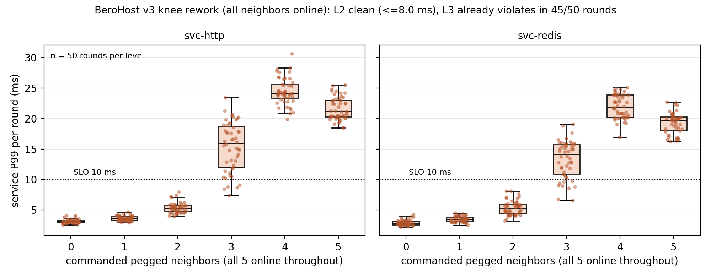
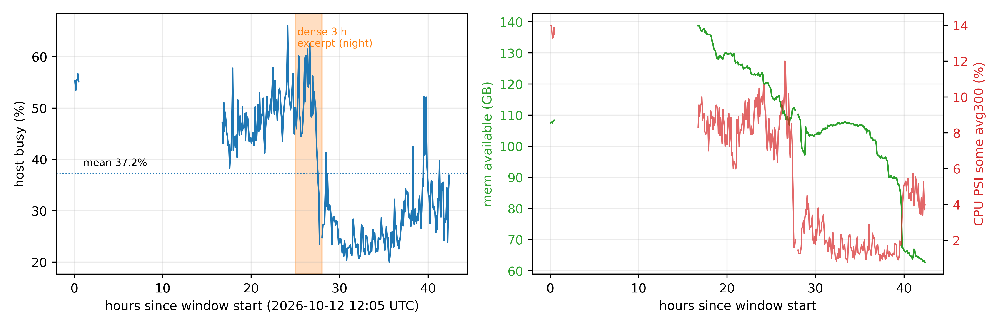
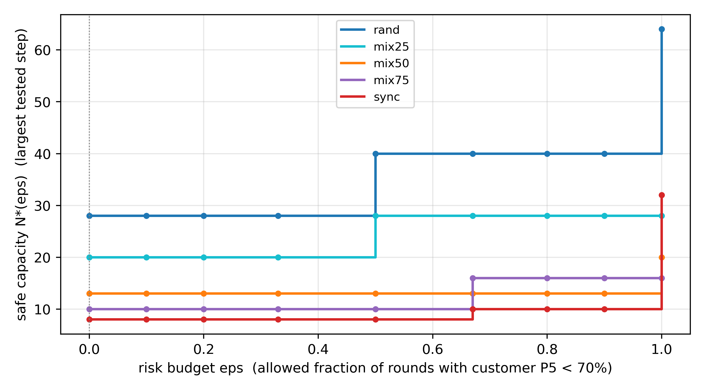
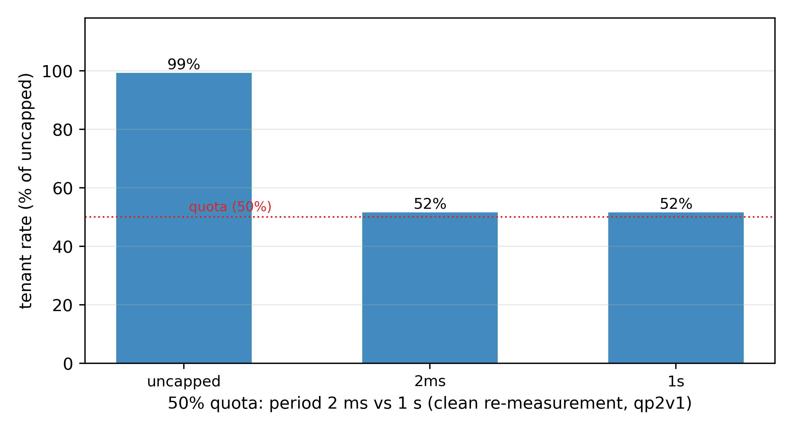
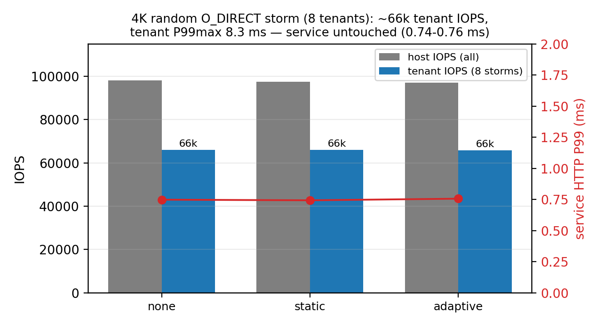
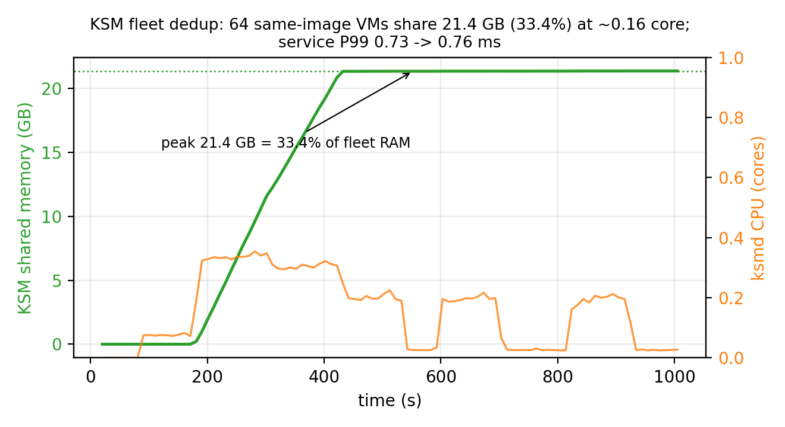
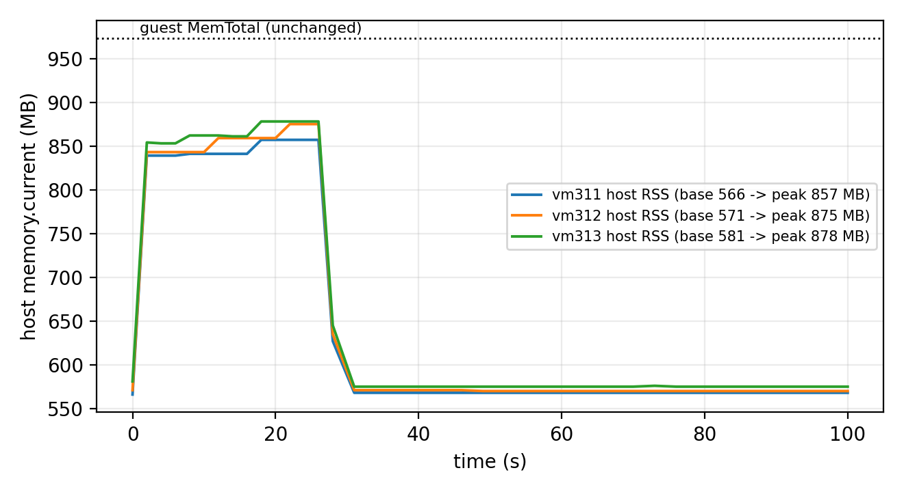
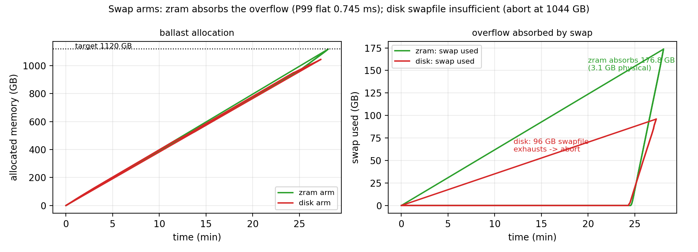

1 Introduction
1.1 Background
In the cheap-VPS market, sellers survive by packing many low-utilization customer VMs onto a small number of physical cores. We observed two real production hosts (anonymized): one carries 64 running customer VMs (70 vCPUs configured) on 4 physical cores / 8 logical threads; another (50 cores) configures 285 VMs with 276 running (8.3x vCPU, 2.0x memory oversubscription). For small providers oversubscription is not an optional optimization but the business model: "1 core, 2 GB" is cheap precisely because most tenants are idle most of the time. The hard part is not "whether to oversubscribe" but three ordered technical problems: can we see it (identify), can we predict it (predict), can we push it (actuate).
1.2 Three Problems
- Identify: demand is censored, and aggregates cannot fully recover it. CPU quotas are standard; once a tenant hits its cap, its "usage" no longer represents demand — a tenant throttled at 50% while wanting 100% looks like an idle one. We further formalize this: from aggregate (usage, throttle-fraction) counters alone, no estimator that sees only these counters can be correct for all workloads (exact non-identifiability — identical observations, different demand; stronger than statistical unbiasedness; construction in Section 3.3.1); what can be certified is a point estimate of the running-stretch mean plus a shape-free floor $q(1+t)$. The identifiability boundary is therefore stated explicitly rather than assumed away.
- Predict: capacity is set by phase structure, not average utilization. With the same per-tenant duty (20%), 64 tenants in random phase safely sell 28 seats (P5 ≥ 70% bar; fine-scanned boundary [28,32)) while fully aligned tenants sell only 8 (boundary [8,10)); and a 35%-busy synchronized set collapses while a 98%-busy random set stays safe — safety is not identifiable from utilization. Phase structure is measurable from one-second per-tenant history (phase profiles) and can even be arranged at provisioning time (phase scattering).
- Actuate: efficiency levers must be split into invisible gains and tenant-visible regressions. Core isolation, KSM dedup, and free-page reporting are invisible to tenants; quotas, IO caps, and zram carry explicit prices. The product space of a small provider is exactly "how far density can be pushed without reducing tenant-visible resources".
Observation design: the three problems share one bottleneck — observational capability. Three capabilities (censoring identification / phase resolution / time resolution) are each necessary (Section 3.6) and jointly sufficient for our target workload family (an empirical statement); the Section 7 comparison attributes each baseline's failure to the capability it lacks.
1.3 Approach Overview
Two self-built testbeds make the problems verifiable: a nested PVE bed (4 vCPU / 19.5 GiB, 16 tenants) and a bare-metal bed (2x Xeon 8259CL, 96 threads / 991 GiB, 64-VM fleet; isolation claim verified against SMT/NUMA topology), anchored by read-only telemetry from two production hosts. Around the three pillars:
- Identify — the censoring identifiability analysis (Section 3.3.1), a 90-cycle paired validation, and a mixed-occupancy three-estimator ablation (naive / quota-scaled / throttle-corrected).
- Predict — the density law $N^* = C/(\varphi + (1-\varphi)\rho) = C/(\rho\kappa)$; three-point mixed-phase validation, the anti-phase arrangement experiment, and threshold-qualified capacity curves (primary bar P5 ≥ 70%).
- Actuate — risk-calibrated admission (pseudocode and calibration protocol in Section 5.3.1) landing on the capacity oracle in an online head-to-head comparison; no-regression controls (KSM/FPR/zram, adaptive IO; micro-period quotas re-measured — the earlier +35% claim is withdrawn, Section 9.1) raising density per resource.
1.4 Summary of Results
- Identify: five pegged tenants at 30% quota show 1.50 cores on the usage panel against 5.00 cores of true demand (3.3x, 7/7 rounds); in the v2 repeat (50% quota), throttle-corrected estimates hit the truth in all 90 cycles and naive "release" decisions violate in 90/90; the v3 rework (30% quota, 90 cycles) replicates the direction (naive 3.6x under-report; corrected median |err| 0.55 cores, 88/90 within ±20%); a mixed-occupancy ablation (3 pegged + 3 idle @30%, truth 3.3) yields aggregate errors — naive -2.31 (unsafe), quota-scaling +0.01 (smallest in this sample because bursty peaks saturate the quota), throttle correction -0.20, full-vCPU +2.70, uncapped -0.16 — while per tenant, saturated tenants are exact under both methods and the window-averaged throttle fraction is diluted by idle time for bursty tenants (0.033 vs true 0.10); estimator choice must rest on per-tenant correctness, with multi-resolution throttle sequences (Ch. 9) fixing the dilution.
- Predict: the density law hits three mixed-phase break points on the physical host — $\varphi$=0.50 predicted 13.3 (13 pass, 16 fail), $\varphi$=0.75 predicted 10.0 (10 pass, 13 fail), $\varphi$=0.25 predicted 20.0 (20–24 pass, 28 fail); random-vs-aligned safe capacity ratio 3.5× at the primary bar (3.5×–4× across bars); the utilization-impossibility counterexample (35% vs 98%).
- Actuate: isolation is the only lever surviving every storm (physical-core verified); the fixed phase-aware admission stops inside the fine-scanned synchronized bracket (8 seats; 10 = first fail); KSM reclaims 21.9 GB (33.4% of fleet RAM) with service P99 0.73→0.76 ms, and idle "1 GB" VMs hold only 156–315 MB of host memory (free-page reporting already returning free pages) — the key enabler of memory density.
- Evidence strength: 100-round knee (two batches), 180-cycle censoring (two batches), 30-round combined-stress campaign, 4-round fine scan, 3-round sync; explicit statistics (round-clustered, binomial bounds, P99 primary), anomalies (OOM-offline VMs, degraded rounds, batch drift) archived and merged via the v3 rework.
1.5 Contributions
Primary contributions (Identify and Actuate)
- Identify (censoring identifiability + cross-batch validation): the running-stretch-mean estimator with exactness conditions, a conditional floor, an aggregate non-identifiability construction, and validation across 180 cycles / 60 independent rounds (two batches).
- Actuate (phase-aware admission + intervention evidence): the complete risk-calibrated admission specification (pseudocode, parameters, calibration protocol), the complete 14-round comparison (both-bar final), the C5 anti-phase intervention (same tenants; phase arrangement alone changes capacity x2/x4), and fine-scan boundary pinning (sync [8,10), rand [28,32)).
Supporting contributions (supporting evidence; not standalone claims)
- Predict (approximation model + three-artifact PPC): the assumption-explicit safe-capacity approximation and the PPC (parametric / empirical forward prediction / online actuator), with prediction quality reported as measured (4/5 zero over-admission; the optimistic sync case is vetoed by the online peak gate) — prediction is step advice and risk ranking; the online gate carries safety.
- Efficiency ledger (supports the density ceiling, Chapter 9): the per-resource no-regression ledger for CPU/memory/IO (KSM/FPR zero-visible-regression; zram/quota/IO caps explicitly priced).
Platform + artifacts: two testbeds, production telemetry, all scripts and raw data.
1.6 Structure
Section 2 related work; Section 3 system model and problem definition (incl. 3.3.1 identifiability); Section 4 measurement study; Section 5 design (risk-calibrated admission and the no-regression control stack, with algorithm pseudocode); Section 6 implementation and testbed; Section 7 evaluation (comparison, combined-stress, estimator characterization); Section 8 physical-host validation and the density law; Section 9 resource-efficiency modules (KSM/FPR/zram/adaptive IO, incl. the micro-period self-audit correction); Section 10 discussion and limitations; Section 11 conclusion.
2 Related Work
2.1 Oversubscription and Admission in Cloud Platforms
Oversubscription is central to cloud resource efficiency. AUDIBLE [1] (ASPLOS 2024) controls server capacity violations with per-tenant empirical distributions combined convolutionally, substantially improving packing at hyperscale; Coach [2] (ASPLOS 2025) exploits long-term temporal patterns across all resources and monitors/mitigates contention; Hestia [3] (SIGCOMM 2026) aggregates workloads by temporal complementarity using a volatility metric (MCV) to stabilize oversubscription ratios. All of these assume long, rich, correlatable history and target platform-side capacity accounting.
Our setting exposes two blind spots of that line for small providers. First, synchronization: temporal complementarity works precisely because loads are out of phase; when tenant loads synchronize (hourly jobs, batch deployments, attacks), aggregation aligns the spikes — our one-minute periodic spike timeline is direct evidence. Second, the observability gap: hyperscalers aggregate over billing windows, whereas small providers protect themselves with hard quotas; once a quota binds, "usage" becomes a censored observation, and Section 5 shows that decisions based on it systematically overestimate headroom (3.3× underestimate of true demand).
On the admission side, Kerveros [4] (OSDI 2023) reports production capacity bookkeeping and buffering in a large public cloud; Risk-aware Adaptive vCPU Oversubscription [5] (2024) and the [5] (ProtoHAIL; peer-reviewed as ProtoRAIL at MLSys 2025) learns risk-aware adaptive ratios via prototypical imitation learning with human-in-the-loop; conformal demand envelopes for GPU clusters [7] (2024) turn oversubscription into calibrated risk envelopes; SCROOGEVM [6] adjusts oversubscription ratios based on detected host quiescence; RSR [8] (2026) uses calibrated interval prediction to size individual VMs. These works are strong on prediction and calibration, but their evaluation targets are platform-side capacity violations or single-VM sizing, not which control mechanism actually protects business tail latency on a small host. Our controlled comparisons of CPU quotas, CPU weights, core isolation, memory double-gates, and IO caps/weights answer exactly that, yielding the "isolation first, hard caps second, no soft priorities" conclusion.
2.2 Resource-Control Primitives and Scheduling
cgroup v2 supplies the entire control surface we use: cpu.max (bandwidth quota and period), cpu.weight, memory.high/memory.max, memory.swap.max, io.max/io.weight/io.latency, and PSI [16-18]. The kernel documentation defines the semantics but leaves the combined behavior under multi-tenant oversubscription open. Our measurements add operationally important facts: block-IO accounting may bind to the whole-disk device rather than the mounted partition; io.weight only distributes bandwidth when an IO scheduler such as BFQ honors it (the host default none makes it a no-op); CPU quotas protect averages while manufacturing pulse trains that hurt tail latency; and even 100× CPU weight does not protect short-request tails on a saturated host.
On the KVM scheduling side, the community has long studied lock-holder preemption and vCPU spinning under oversubscription [18] (KVM Forum 2021); a December 2025 kernel patch series (sched/kvm: Semantics-aware vCPU scheduling for oversubscribed KVM) continues improving this with a vCPU debooster and IPI-aware directed yield. These mechanism-level results align with our observations: oversubscribed-host tail latency is not an average-value problem, and the reliable way to bring tails back under control is to remove the critical workload from the contention set (isolation) rather than to fine-tune priorities within it.
2.3 Industrial Practice and Tools
The Kubernetes ecosystem expresses differentiated policies as "overcommit classes": Inditex's k8s-overcommit-operator [10] rewrites resource requests per workload label, and OpenShift's ClusterResourceOverride [11] controls node density through request/limit ratios; KubeVirt [12] exposes a global cpuAllocationRatio and its community still requests per-VM overcommit overrides (issue #15710: opened 2025-09, closed unfixed 2026-02), showing that per-customer oversubscription tiers remain poorly supported in practice. Research prototypes SweetSpotVM/SlackVM [13] demonstrate multi-level oversubscription templates with local schedulers; Calabi [14]'s host resource management stacks Gold/Silver/Bronze slices, guest/emulator CPU pools and pinning, with KSM/zram for memory oversubscription. Our work complements these artifacts with quantitative boundaries: for instance, on the memory path, compression/swap is exactly the failure path our measurements recommend keeping off by default (uncapped trials OOM-killed two tenants; capped trials drained host swap), whereas the double-gate (memory.high + memory.swap.max=0) bounds oversubscription without killing tenants or polluting host swap.
2.4 Measurement Methodology
On methodology, Metior [9] (ASE 2021) warns that adjacent time-series samples are not independent and that quantile comparisons must be estimated in time blocks or independent runs. All our controlled comparisons use a fixed SLO (P99 ≤ 10 ms), identical arrival sequences, open-loop generators (logging planned/actual send times, timeouts, and errors), and multiple replicates of every key conclusion (five rounds for the knee, seven for censoring, four synthesis passes); results that do not meet this standard are explicitly labeled preliminary.
2.5 Positioning
Mechanistic distinction from temporal-pattern work (explicit boundary). Coach [2] and Hestia [3] also exploit temporal structure, but their mechanisms presuppose mobility/arrangability: Coach relies on long-term prediction and VM types with guaranteed/oversubscribed partitions; Hestia aggregates complementary workloads into groups and schedules them (with control-plane budget). Our regime (one or few small hosts, no migration freedom, no long history, quota-censored demand) forbids these mechanisms; PPC is therefore a read-only, measurement-driven estimator whose new mechanism is (i) a joint block bootstrap over per-tenant 1-s phase profiles (convolution on the measured joint structure, not on marginals), and (ii) a decision rule pairing the Section 3.3.1 identifiability boundary with "point estimate + tail bar + zero-over-admission". In one line: prior work answers how to schedule to smooth volatility; we answer how to predict safe capacity and hold it online when scheduling is not available.
We claim neither a new learning algorithm nor new prediction theory. This is a measurement-driven systems study for small providers: it decomposes "multi-resource oversubscription with multiple control levers" into separately comparable experimental units, quantifies which folk practices hold and which do not under short history, censored demand, and mixed bursty loads, and delivers a combined-stress-validated admission and shaping configuration. The relationship to hyperscale work is complementary: our hosts are smaller, observability is worse, and the decision population is cheaper — exactly the operating conditions of a large share of the global low-cost VPS market.
Reference check
- References verified 2026-10-13 against official sources (see
references.md); five minor fields (ORAIL source, GPU-conformal source, OpenShift direct page, SlackVM authors, LKML link) are completed at packaging time. - Hestia's venue verified (SIGCOMM '26, pp. 491–504; full title "Rethinking Cloud Optimization: Volatility-Driven for Better Outcomes").
3 System Model and Problem Definition
This chapter formalizes only what the later experiments actually use; no assumptions are introduced without evaluation.
3.1 Platform and Tenant Model
Consider a single multi-tenant host (the typical small-provider setup) with $C$ logical CPUs, $M$ bytes of physical memory, and one shared block device (throttling and accounting keyed to the whole-disk device). Two classes of workloads run on it:
- Sensitive services: $s$ lightweight service VMs , e.g., status monitoring, gateway, static serving whose end-to-end latency must meet a service-level objective. We instrument one HTTP and one Redis service.
- Customer VMs (tenants): $n$ oversubscribed customer machines (typically 1 vCPU, a few GiB of memory) — the revenue source. Tenant load is characterized by a class: duty cycle $\rho$ (fraction of time working), period $P$, phase $\phi$ (aligned or randomized), resident memory, and IO intensity. We cover four classes: pegged ($\rho{=}1$), bursty ($\rho{\approx}1/3$), idle ($\rho{\approx}1/10$), and synchronized (aligned phase).
Each tenant VM $i$ can be constrained by a control vector $a_i = (\mathrm{pin}_i, q_i, w_i, g_i, b_i, \mathrm{swapmax}_i)$, all through the cgroup v2 interface [15]: core set, CPU quota (cpu.max), CPU weight (cpu.weight), memory soft limit (memory.high), block-IO cap (io.max), and per-cgroup swap limit (memory.swap.max). Controls never change the sold configuration (no migration, no down-sizing), matching the operational envelope of small providers.
3.2 Service-Level Objective and Metrics
Service SLO. Within an evaluation window of length $W$, the $P_{99}$ of request completion latency must satisfy $P_{99} \le L$. We use $W \in [30, 120]$ s depending on scenario and $L = 10$ ms; thresholds are fixed before and never adjusted after results. A window that violates is counted as a violation window. Requests are injected at a fixed rate by an open-loop generator that records planned send time, actual send time, and completion; timeouts (>2 s) and errors are counted separately and excluded from latency quantiles.
Customer-side experience. The work rate of a tenant is its measurable busy-loop iteration rate (it/s), compared against the unconstrained full-speed baseline (roughly 55–75 M it/s depending on load shape); this metric expresses where the cost lands.
Host-side evidence. Per-cgroup cpu.stat (usage_usec, nr_throttled, throttled_usec), memory.current/memory.events, io.stat, plus host-level MemAvailable/swap, 3-second CPU busy fraction and PSI pressure counters [16].
3.3 Demand, Censoring, and the Observation Model
The true demand $d_i(t)$ of tenant $i$ is the CPU it would consume without quota and without contention truncation. The observable usage satisfies
$$u_i(t) \;\le\; \min\big(d_i(t),\; q_i\big),$$
truncated either by an explicit quota ($q_i$ binding) or by contention (all tenants shrink proportionally when the host saturates). Both hide demand from a usage dashboard; we focus on quota censoring and detect it via throttle evidence:
$$\text{censored}_i(t) \;=\; \mathbf{1}\big[\Delta\,\mathrm{throttled\_usec}_i(t) > \epsilon \;\vee\; \Delta\,\mathrm{nr\_throttled}_i(t) > 0 \big],$$
i.e., the tenant was actually throttled in the window. Two estimators follow:
- naive: $\hat d_i^{\text{naive}} = u_i$ (dashboards take usage as demand);
- censoring-aware (empirical estimator): if $\text{censored}_i = 1$, with throttle fraction $t_i$ over the window, take $\hat d_i = \min(\text{vCPU},\, u_i/(1-t_i))$. This formula assumes the tenant would keep burning at its unthrottled rate during throttled time: it is near-unbiased for saturated demand (our primary workload family; ground-truth error ≤9% in Section 7.3c), over-estimates bursty demand (counterexample in the unit tests: true demand 0.3, quota 0.2 → estimate 1.0), and may under-estimate intermittent saturation. It is therefore an empirical estimator to be characterized per workload family, not a distribution-free bound; "at least its full vCPU" remains the conservative fallback. If $\text{censored}_i = 0$, use $u_i$ — note $u_i$ is always a (weak) lower bound on demand; the absence of throttling only rules out quota censoring, not contention shrinkage.
History length enters the same way: a newly arrived tenant has $T_{\text{hist}} = 0$ and admits only class priors or conservative bounds; the cold-start discussion builds on this (a dedicated experiment is listed as future work).
3.3.1 Identifiability of Censoring: What Counters Can and Cannot Recover
Observation model and assumptions. Window $W$ spanning several quota periods $P$; quota $q$ (cores); budget $qP$ per period. Let $u$ = mean usage, $t$ = throttled-time fraction, $\bar d$ = window-mean demand, $\overline{d}_{\text{run}}/\overline{d}_{\text{thr}}$ = mean demand inside the running / throttled stretches. Assumptions: (A1) single cgroup, work-conserving, no external steal; (A2) the budget is exhausted within the window (else no throttle evidence); (A3) $W \gg P$, ignoring period-boundary effects. Caveat: throttled_usec counts the cgroup's throttled state in real CFS and may include slack inside throttled windows; the identities below are a bandwidth (budget-exhaustion) model, and the residual versus the implementation is reported at the end.
Proposition 1 (what the point estimate really is, and when it is exact). When the budget is exhausted, total delivery in the window is $uW = qW$, all of it inside the unthrottled stretch; hence$$\hat d := \frac{q}{1-t} \;=\; \overline{d}_{\text{run}}\qquad(\text{mean demand over the running stretch}),$$and under $d(t)\ge q$ throughout (no idle slack) we have the bias identity$$\bar d - \hat d \;=\; t\,\big(\overline{d}_{\text{thr}} - \overline{d}_{\text{run}}\big).$$The exactness condition is $\overline{d}_{\text{thr}} = \overline{d}_{\text{run}}$ (equal means over the throttled and running stretches) — constant demand is sufficient but not necessary. Non-constant example: $q{=}0.3$, one 1 s period, demand 0.6 (first 0.5 s) / 0.4 (0.25 s) / 0.8 (0.25 s): the budget is exhausted at 0.5 s, $t{=}0.5$, and $\hat d = 0.3/0.5 = 0.6 = \bar d$ although demand is plainly not constant. In general: peaks inside the running stretch followed by decay (the typical burst) produce over-estimation; demand rising during throttle (low-then-high) produces under-estimation; the sign is shape-dependent and not identifiable from aggregates.
Counterexamples in both directions (idealized model). Over: $q{=}0.5$, $P{=}1$ s, demand 1.0 for the first 0.5 s then 0.5; budget is exhausted at 0.5 s, $t{=}0.5$, $\hat d = 1.0 > \bar d = 0.75$. Under: $q{=}0.5$, demand 0.5 for 0.9 s then 1.0; budget exhausts at 0.95 s, $t{=}0.05$, $\hat d = 0.526 < \bar d = 0.55$.
Proposition 2 (conditional lower bound, under $d \ge q$). If $d(t) \ge q$ throughout the window (continuous saturation, no slack), then$$\bar d \;\ge\; q\,(1+t).$$(Proof: the running stretch accumulates exactly $qW$; the throttled stretch contributes at least $q\,tW$ because $d \ge q$ there; add and divide by $W$. Equality iff $d \equiv q$ while throttled. $\square$) Boundary: the precondition "$d \ge q$ throughout" cannot be verified from aggregate counters — it is a property of the target workload family (continuous saturation), not a per-tenant certification. In the system this floor is used only for tenants with continuous throttle evidence (the conservative backstop of Section 3.3); for everyone else we report the point estimate plus uncertainty and claim no bound.
Boundary (counterexample): "continuous throttling" and "d>=q throughout" are not equivalent — e.g. q=0.2 with demand 1.0 for the first 20% of each period and 0.1 for the rest: the budget still exhausts every period (t=0.8, constant throttle evidence) yet the true mean is 0.28, below q(1+t)=0.36. The engineering trigger is therefore an empirical conservative policy (its bias direction is over-estimation, i.e. more conservative admission; it cannot cause over-admission) — not a certified bound, whose status remains conditional on d>=q per Proposition 2.
Proposition 3 (aggregate non-identifiability). There exist two demand processes with identical $(u,t,q)$ but different window means; no function of $(u,t,q)$ can be correct for all processes (an identifiability impossibility), and the bias sign is not identifiable. Construction (throttle time explicitly accounted). $q{=}0.2$, vCPU$=1$, window = one period. Process A: $d \equiv 5/9 \approx 0.556$ (never slack; $5/9$ makes $t$ exactly 0.64) → budget exhausts at $0.36W$, $t=0.64$, $u=0.2$, mean $5/9 \approx 0.556$. Process B: $d=1.0$ for 84% of the duration, 0 otherwise → budget exhausts at $0.2W$, throttled until $0.84W$, $t=0.64$, $u=0.2$, mean $0.84$. Identical observation $(u,t)=(0.2,0.64)$, means differ by $0.284$; any estimator errs by $\ge 0.142$ on one of them. $\square$
Practical consequences. (i) Aggregate unbiasedness is unattainable — estimators are characterized per workload family; (ii) recovering demand structure requires time resolution (a per-window $t$ sequence or 1-s history) — the motivation for the phase-profiled aggregation in Section 5: amplitude from throttle evidence (with a conservative floor), structure from time history; (iii) under-estimation (the unsafe direction) needs an explicit backstop: for continuously saturated tenants the design uses $\hat d = \mathrm{vCPU}$.
Empirical characterization. Saturated family: ≤9% across three quota levels (6.3c); the v2 batch (90 cycles = 450 tenant-windows incl. 90 offline): throttle detection + vCPU backstop gives exactly 1.00; the 360 online windows average $t = 0.470$ and the bare formula gives 0.943 (−5.7%) — precisely the residual between Proposition 1's model and real CFS accounting (period boundaries, throttled-state timing including slack), removed by the backstop. The bursty family exposes the other side (backstop reports 1.0 for a true 0.3 — Section 3.3), deliberately conservative; the intermittent family's under-estimation is covered by the no-double-promise + pause monitors.
3.4 Decision Problems
The system makes two kinds of decisions over an arrival sequence:
- Admission: for each arriving tenant, use the currently visible evidence (history, throttle evidence, host pressure, latest service-tail windows) to output allow/defer with a reason; batch arrivals require reservation accounting so the same spare capacity is not promised twice.
- Shaping: choose control parameters $a_i$ for admitted tenants, and decide on "release/expand" requests from capped tenants.
The objective is to maximize admitted volume (count, VM-hours, or configuration-weighted) subject to the service SLO, while reporting costs (customer work-rate loss, throttled-tenant queueing) separately and without hiding them.
3.5 Assumptions and Scope
- Tenant load is not adversarial: our "pegged tenant" is legitimate but extreme (mining, compilation); malicious behavior is out of scope.
- No live migration, no killing of tenants, no re-configuring of already-sold resources — these change the service model and are deferred.
- The testbed is a nested virtualization environment (Proxmox inside a KVM guest); results reflect the behavior of a topology isomorphic to small-provider production but do not substitute for bare-metal extrapolation.
- The 10 ms SLO is our strict default; the evaluation chapter discusses sensitivity across thresholds.
3.6 Observation Necessity: Three Constructive Counterexamples and the Minimal Observation Set
The organizing thesis of this paper: the bottleneck of safe-capacity decisions is observational capability, not the capacity algorithm. Three constructive results (formal proofs and executable counterexamples in Appendix A), each with measured counterparts here:
Proposition A (censoring impossibility). Given only aggregate counters (usage, throttle fraction, quota), no estimator that sees only these counters can be correct for all workloads — two processes can produce identical observations with different demand (construction in Section 3.3.1, Prop. 3). This is an identifiability impossibility (it holds for any deterministic function of the observations) and is stronger than statistical unbiasedness. Corollary: dashboard-driven release/oversell decisions are unfixably dangerous — 90/90 independent-round judgments violate (Section 4.3b).
Proposition B1 (capacity is not determined by marginals; construction). N tenants each work w seconds per period P (identical per-tenant marginals). Aligned phases give peak concurrency N; random phases give an overlap distribution with mean rho N (rho = w/P). With pool capacity C, the aligned fleet is safe iff N <= C, while the random fleet's capacity is bounded above by C/rho (mean-concurrency necessary condition rhoN <= C) — a capacity ratio of at most 1/rho = 5 at rho = 0.2 , i.e., random/aligned <= 5. Physical realization (Section 8.4): primary-bar capacities 28 vs 8 (fine-scan brackets [28,32)/[8,10)), with the unsafe fleet reporting lower* utilization (30.4% vs 66.4–68.0%).
Proposition B2 (threshold impossibility; theorem). Let the monitoring window be L seconds. An aligned fleet's windowed delivered utilization is capped at **U(L) = [w*floor(L/P) + min(L mod P, w)] / L**: the total overlap of an L-second window with the burst windows is at most wfloor(L/P) + min(L mod P, w), so delivery is at most C times that overlap. Special cases: for L <= P, U(L) = min(w,L)/L (the 30-s rolling window of the sync experiments: 12/30 = 40%); for L an integer multiple of P, U = rho; for L = kP + r with r > 0, U can slightly exceed rho (e.g. L = 90 s: 24/90 = 26.7%). Hence any rule "admit while windowed utilization < theta" with theta > U(L) admits unbounded N on aligned fleets whose safe capacity is only C. Measured counterpart:* util80 (L=30 s, theta=80% > 40%) sells to the experiment cap (40) in the aligned phase while its criterion reads ~20-40% (Section 7.4b); the "35%-busy collapse vs 98%-busy safe" inversion is a field instance of this theorem.
Proposition C (sampling insufficiency). Let a monitor sample utilization at fixed interval Delta with burst width w < Delta. There exist benign and dangerous fleets whose sample sequences are identical , e.g., all zeros while safe capacities differ — place the bursts between samples. Evidence level: formal construction plus indirect measurement (util80's stop alternates 28 vs 40 across identical runs — sampling-moment sensitive, Section 7.4b); the direct experiment (fixed phases, sampling interval varied) is listed as future work; this proposition is cited as a construction with indirect evidence only. Corollary: the sampling rate must resolve the burst shape of interest (our online history uses 1 second; a 12-s aligned burst is one phase-bucket wide).
Minimal sufficient observation set (this paper's design implements it):
| Capability | Failure axis it covers | Mechanism | Measured consequence when missing |
|---|---|---|---|
| (1) Censoring identification (quota + throttle evidence) | hidden demand | point estimate + conservative heuristic | naive/quantile: 90/90 release violations |
| (2) Phase resolution (joint structure, >= 1 s history) | overlap averaged away | phase profiles + PPC | iid/marginal methods: 40 seats in sync, P5 = 16% |
| (3) Time resolution (sampling rate >= burst width) | bursts sampled away | 1-s history + aligned sampling | single-point busy: 28/40 stop drift across identical runs |
Evidence levels and boundaries: A, B1, B2 and C are all formal constructions/theorems (B2 is provable) each with measured counterparts (A: 90/90; B1/B2: Section 8.4 and the util80 sync record; C: construction plus the util80 drift as indirect evidence, direct runs queued). Executable re-checks: Appendix A (tools/theory_tests.py, output archived in research_data/theory_checks.txt). "Jointly sufficient" is an empirical statement for our target workload family and quality bars (in the 14 rounds, the policy with all three is the only one with no service-side violation in either phase and random-phase customer compliance), not a theorem; the aligned-phase customer evidence (show5) is merged, and the anti-aliasing direct experiment remains future work.
4 Measurement Study
This is the paper's empirical core (Figures 2–9, 17–18). All numbers come from the archived pilot data plus the v2 mass-repeat campaign; each subsection ends with explicit boundaries. Common settings: service SLO = P99 ≤ 10 ms; probes inject 100 req/s in open loop and log per-request planned/actual send and completion times; host busy fraction from 3-second /proc/stat windows; customer rate = busy-loop iterations/s (full-speed baseline ≈ 55–75 M it/s).
4.1 Knee and Instantaneous Overlap (Figure 2)

Setup. Services (one HTTP, one Redis, 1 vCPU each) are held constant; pegged neighbors (1 vCPU busy loops) are added from 0 to 5; each level is probed for 20 s per service at 100 req/s after a 10 s settle; five rounds run in randomized order.
Results. Cross-round means (ms):
| Neighbors | HTTP P50 | HTTP P99 | HTTP P999 | Redis P99 | Host busy |
|---|---|---|---|---|---|
| 0 | 1.39 | 2.57 | 4.0 | 2.40 | ~3% |
| 1 | 1.44 | 3.00 | 6.3 | 2.68 | ~42% |
| 2 | 1.59 | 3.38 | 13.7 | 3.19 | ~67% |
| 3 | 1.92 | 4.86 | 26.8 | 4.95 | ~86% |
| 4 | 11.0 | 23.8 | 27.4 | 20.8 | 100% |
| 5 | 6.9 | 21.5 | 25.9 | 18.5 | 100% |
Observations. (i) The knee is stable at 3→4: with the fourth pegged neighbor, P50 jumps from 1.9 to 11.0 ms and P99 from 4.9 to 23.8 ms, tightly across five rounds. (ii) Tail-percentile warning precedes the median collapse: P999 already fluctuates at 2–3 neighbors (14–27 ms), one or two levels earlier. (iii) The 4-vs-5 comparison is non-monotonic in P50 (11.0 vs 6.9) — reading averages alone would rank 5 neighbors "better". (iv) Zero timeouts throughout: the service "looks healthy" by error rate or mean.
Interpretation. Once the runnable set persistently exceeds the logical core count (C = 4; the fourth pegged tenant plus service and probe threads), short requests begin queueing for scheduling shares; collapse is an event of instantaneous concurrency crossing the capacity line, not of average utilization reaching a threshold (at 3 neighbors the host is already 86% busy yet healthy). This explains why fixed-utilization thresholds fail here and motivates managing instantaneous concurrency in the design.
Boundaries. One host, 4 logical cores; neighbors are continuously pegged (worst case); no quotas or isolation; absolute numbers do not extrapolate to other core counts, but the mechanism does not depend on the count.
4.1b Repeat: 50-Round Amplification (Figure 17)


Setup. The automated engine reran the Section 4.1 procedure 50 times (v2 campaign; randomized order, settle between levels, two 20 s probes per round). During the campaign the fourth pegged neighbor was OOM-killed by the host in round 2 and stayed down; from then on the nominal 4-neighbor level in fact ran 3 neighbors and the nominal 5-neighbor level ran 4. We therefore merge by neighbors actually running: 3 neighbors = all of L3 + L4-from-round-3 (n = 98); 4 neighbors = L5-from-round-3 (n = 48).
Results (HTTP P99, ms; Figure 17 left).
| Neighbors running | n | mean | median | range | > 10 ms |
|---|---|---|---|---|---|
| 0 | 50 | 2.92 | 2.84 | 2.45–4.17 | 0 |
| 1 | 50 | 3.42 | 3.31 | 2.74–4.82 | 0 |
| 2 | 50 | 4.47 | 4.47 | 3.19–5.95 | 0 |
| 3 | 98 | 7.36 | 7.10 | 4.71–13.50 | 7 (7%) |
| 4 | 48 | 24.44 | 24.42 | 20.66–28.48 | 48 (100%, all > 20 ms) |
Redis mirrors this (6.8 ms → 21.4 ms). The round-1 L4 sample (when the fourth neighbor was still up, i.e. exactly 4 running) reads 22.99 ms — inside the four-neighbor band.
Rework batch (all five neighbors online throughout, 50 rounds; Figure 29).
| Neighbors running | n | mean | median | range | > 10 ms |
|---|---|---|---|---|---|
| 0 (v3) | 50 | 3.14 | 3.1 | 2.6–4.1 | 0 (0%) |
| 1 (v3) | 50 | 3.62 | 3.6 | 2.9–4.6 | 0 (0%) |
| 2 (v3) | 50 | 5.35 | 5.3 | 3.9–8.0 | 0 (0%) |
| 3 (v3) | 50 | 15.41 | 16.0 | 7.4–23.4 | 45 (90%) |
| 4 (v3) | 50 | 24.45 | 24.1 | 19.9–30.6 | 50 (100%) |
| 5 (v3) | 50 | 21.62 | 21.1 | 18.5–25.5 | 50 (100%) |
Observations. (i) The 3→4 cliff reproduces round after round: 48/48 four-neighbor rounds sit at P99 ≥ 20.7 ms while 93/98 three-neighbor rounds stay ≤ 12 ms — the two distributions do not overlap (Figure 17 right). (ii) Absolute levels run slightly higher than the first 5-round batch (3n 4.9, 4n 23.8 ms → 7.4/24.4 ms here); the ordering and the cliff position are unchanged. We record the drift; plausible causes include host state after ~40 days online and cache/fragmentation differences between batches. (iii) The verdict is threshold-insensitive: even at a 13.5 ms bar only 7% of three-neighbor rounds would be flagged, while the four-neighbor minimum is 20.7 ms. (iv) v3 rework: L2 stays clean (all ≤ 8.0 ms; the eps=0 capacity remains 2), but L3's violation rate moves up sharply — 45/50 rounds (median P99 16.0 ms) — diverging from the v2 reconstruction (eps~7%; exact Clopper-Pearson 95% interval [78%, 97%] for L3); both batches agree that L4 collapses 100% ([93%, 100%]). So the eps=0 capacity and the L4 collapse replicate; only L3's risk budget drifts with the host environment (same protocol, same 87% busy; absolute drift recorded) — the conservative statement uses the eps=0 capacity of 2.
Boundaries. The batch baseline differs from the first batch (absolute drift); the post-mortem level merging uses run logs and is automated in make_v2_figs.py. The v3 rework shows the L3 risk budget is batch-sensitive (7% vs 90% violation across batches at the same busy) — capacity claims use the eps=0 bar (2 neighbors) and per-batch eps values are reported explicitly.
4.2 Synchronized Bursts (Figures 3 and 4)
Setup. With "6 synchronized (working during the first ~6 s of every wall-clock minute) + 2 bursty + 2 pegged" tenants, a 120 s probe records per-second latency. Two phase controls follow: ten idle-class customers with clustered phases (near-simultaneous starts) versus fully randomized phases (--randphase); and randomized phases mixed with a single pegged tenant.
Results. (i) The synchronized scenario has a strict periodic timeline (Figure 3):

``quiet: P99 ≈ 2–3 ms burst: P50 rises to 4–8 ms, P99 14–22 ms (max 33 ms) after: back to 2–3 ms; repeats every 60 s``
Four replicates (p3, p3b, p3c, p3d): aggregate P99 13.1–22.6 ms, all violating. (ii) Phase control (Figure 4): ten idle tenants cluster-phased → P99 10.2–17.3 ms (violating); fully randomized → 2.7–3.8 ms (two clean rounds). (iii) Randomized phases plus one pegged tenant: P99 14.0–20.8 ms (four rounds p6/p6b/p6c/p6d, all violating).

Interpretation. "Mostly idle" and "clean tail" are different properties: an idle population still has a nonzero probability of several members being awake simultaneously; synchronization (intentional alignment or incidental co-start) turns that probability into a regular event. The realistic production mix is closer to "randomized phases + a few persistent heavy tenants", and the mix of Section 4.1's knee with this result shows that one persistently pegged tenant plus random overlaps already breaks a strict SLO. This motivates the cold-start problem: at arrival time one cannot know whether a newcomer is idle or that pegged tenant.
Boundaries. Aligned bursts are synthetic; clustered phases arise from simultaneous first-boot (production tenants boot at dispersed times, so the fully randomized case is the optimistic, realistic one); loads are synthetic duty-cycle loops rather than real applications.
4.3 Demand Censoring: Usage Lies (Figure 5)

Setup. Five tenants are all pegged (true demand 1.0 core each) and capped at cpu.max = 30000/100000 (30% on average). Two phases are measured: quota (caps in effect) and released (caps lifted, simulating the operator trusting the usage dashboard). Seven cycles (three in c3, two each in c4 and c5); each phase probes both services for 30 s at 100 req/s and reads per-VM cpu.stat deltas.
Results. (i) Estimation: the observed combined usage under quota is 1.50 cores (0.30 each), while throttle evidence (nr_throttled growing by ~440–450 per 63 s window; throttled time fraction ≈ 0.3–0.7) reveals a true demand of 5.00 cores — a 3.3× underestimate, identical in 7/7 runs. (ii) Services (ms):
| Phase | HTTP P99 (range over 5 runs) | Redis P99 | Host busy |
|---|---|---|---|
| quota | 9.2 – 14.0 | 8.8 – 13.8 | ~57% |
| released | 16.7 – 25.0 | 15.0 – 20.9 | 100% |
After release, customer rates fall to about 27–32 M it/s (about half of full speed), the host is instantaneously saturated, and service P99 violates in 7/7 runs, degrading 5–10 ms beyond the quota phase. (iii) The quota phase itself is not "gentle": quotas slice load into pulses and hold service P99 near, sometimes across, the SLO line (9–14 ms).
Interpretation. Censoring has two stacked consequences. First, estimation bias: the dashboard shows "2.5 cores of headroom" while the host is already 25% over capacity; decisions based on it (release, expand, sell more) turn the hidden gap into a public incident. Second, a pulse tax: quotas protect averages while manufacturing periodic bursts that hurt tails by themselves (consistent with the quota comparisons in Section 4.4). The censoring-aware estimate (throttle evidence plus the throttle fraction → the empirical estimate u/(1−t) (near-exact for saturated demand, ≤9% in Section 7.3c; known bias for bursty patterns — see Section 3.3)) yields 5.00 cores and correctly reports "no headroom; capacity action required", avoiding the self-inflicted release.
Rework (v3cen, 30 rounds x 3 cycles = 90 cycles, five tenants @30%). Naive mean 1.54 cores vs truth 5.59 cores (3.6x under-report); throttle-corrected |error| median 0.55 cores, 88/90 cycles within +-20%; naive below 70% of truth in 90/90 cycles — direction and magnitude replicate in an independent batch; the correction is not exact (which is why Section 3.3.1 frames it as an empirical heuristic).
Boundaries. One quota level (30%); synthetic pegged tenants; the quota-phase SLO outcome fluctuates around the line and should be read as "this host already sits at the overload boundary"; the correct next action (migrate/upgrade/refuse) is beyond the scope of online decision-making here.
4.3b Repeat: 90 Cycles (Figure 18)

Setup. The v2 campaign reran the Section 4.3 procedure 30 rounds × 3 cycles = 90 cycles (50% quota; 4 tenants actually running — the fourth was offline early in the batch; tenants remain pegged, true demand 1.0 core each). Each cycle probes both phases for 30 s.
Results (Figure 18). (i) Estimation: in 90/90 cycles the usage panel reports 2.00 cores (4 × 0.50) while throttle evidence recovers 4.00 cores — exactly the truth. A half-size quota halves the reported demand, every cycle. (ii) Service: quota-phase HTTP P99 averages 11.4 ms (range 9.1–14.6; 98% of cycles already across the 10 ms line); released-phase averages 24.7 ms (range 20.6–28.9) with 90/90 (100%) violations — the lowest released-phase cycle is still above the quota phase's 95th percentile.
Interpretation. Same direction as the 7-cycle pilot (5 tenants @30%: naive 1.50 vs aware 5.00), but far harder evidence: the underestimate factor equals the quota fraction exactly, throttle evidence restores the truth, and the naive release decision fails in 30 independent rounds (90 time-correlated cycles, clustered by round). The failure is independent of the quota level (30% and 50% variants agree).
Boundaries. As in 4.3; this batch runs 4 tenants (one offline).
4.4 Reliability of Control Levers (Figures 6–9)
Five candidate levers are each asked to protect the service tail: CPU quotas, CPU weights, core isolation, memory double-gates, and IO caps (with an IO-weight counterexample).
4.4.1 CPU quotas: bound averages, not boost safe packing (Figure 6)

Re-running the neighbor sweep with newcomers capped at 0.75 and 0.50 cores: neither improves the safe knee (the fourth tenant violates regardless — P99 14.0/11.2 and 15.2/11.3 ms; see Section 4.1 for the eps=0 bar and batch drift), while customers really do slow down (~72–78% and ~48–53% of full speed). Quota-pulse comparison (qp1): extending the period from 100 ms to 1 s changes nothing (P99 12.0 ms); staggered periods (100–300 ms) help marginally (10.7 ms) but stay non-compliant. Quotas buy no additional safe seats; they only slow customers and sharpen peaks.
4.4.2 CPU weights: 100× priority still fails (Figure 9)

Raising the service VMs' cpu.weight to 1000 (10×) and 10000 (100×, a verification run) against default-100 tenants under five pegged tenants yields service P99 25.4/22.8 and 24.0/22.7 ms — worse than no weights at all (historic five-pegged P99 21.6/19.5 ms) and opposite to the intuition that weights favor the service. IO weights (io.weight 50 vs 500) are equally inert. Soft priorities are not tail-latency protections; isolation is.
4.4.3 Core isolation: the only lever that survives storms on our testbed (Figures 6, 10)
Pinning services and probe to cores 0–1 and tenants to cores 2–3 yields zero violations at 1–5 pegged neighbors (P99 2.9–3.2 ms); tenants share the remaining two cores as expected (about 44% of full speed each at five tenants). The combined-stress synthesis (Section 4.5 / 6.5) reproduces this four times. The cost is explicitly relocated to the "economy tier" — protected services no longer compete.
4.4.4 Memory: the double gate (Figure 7)

Unbounded growth (10 tenants, progressive ballast): at about 13.8 GB of combined tenant residency the host's 1 GB swap is exhausted and two customer VMs are OOM-killed, with several tenants' SSH unresponsive; services, being small, survive. Adding memory.high (1000/800 MB) eliminates deaths and stabilizes the host, but the reclaim triggered by capped tenants lands almost entirely on anonymous-page swap-out — the small swap drains within seconds and becomes a global bottleneck, with tenants experiencing brief unresponsiveness. Setting memory.swap.max = 0 alongside (the double gate) stops swap pollution: oversubscription is throttled in place. Note also: with ballooning disabled, memory a tenant "has touched" returns to the host only on VM restart — dynamic return and the "no compression" stance are an explicit tradeoff.
4.4.5 Block IO: hard caps work, the offender pays (Figure 8)

Ten tenants running 4K 70/30 random read/write (O_DIRECT) push the host to about 16.5k IOPS and drag service P99 to 12.1 ms (violating) although services perform almost no disk IO (a storm hitting "over the mountain"). Applying io.max = 300 riops / 150 wiops per tenant caps exactly as configured, drops the host to 2.6k IOPS, and returns service P99 to 2.7 ms; the cost is that capped tenants' read completion P99 rises to ~96 ms (queueing at the throttle). Two operational details: cgroup IO accounting keys to the whole-disk device (8:0), not the partition; io.weight is a no-op because the host's IO scheduler is none (no BFQ).
Section boundaries. Service VMs being lightweight is a precondition of "isolation works"; the mechanism behind weight failure (host-side packet path / scheduling-credit dynamics) is left as an open question; memory numbers are tied to the 1 GB swap environment.
5 Design: Risk-Calibrated Admission and a Shaping Playbook
This chapter organizes the measurement findings into an executable decision framework for small providers. Two principles: (i) never rely on mechanisms our measurements falsified (soft priorities, average utilization, uncorrected usage); (ii) separate protection from business — the service SLO is guarded by isolation, while density is bought with evidence.
5.1 Overview
The framework has two layers corresponding to two operational actions:
- Shaping decides the competitive form of each admitted tenant and thereby defines the host's protection envelope — which resources are held, under what conditions, to what degree. Section 4 condenses to one sentence: isolation first, hard caps second, soft priorities never.
- Admission decides whether an arriving tenant may enter. It estimates headroom inside the protection envelope using censoring-corrected demand evidence and outputs allow/defer with reasons.
Both layers share one set of monitors (service tail latency, host pressure, per-VM throttle/censoring evidence, data quality), which also serve as admission's pause trigger.
5.2 The Shaping Playbook
CPU. Step one — and the only step validated under every storm on this testbed — is carving out dedicated cores for sensitive services: pin service and probe threads to $c_{\text{svc}}$ logical cores (2 on our testbed) and tenants to the rest (taskset/cpuset; on Proxmox, taskset -apc on the qemu process). The lighter the services, the cheaper this step. Step two (optional): per-tenant cpu.max quotas — understood as business tiering and cost control (what each tier sells), not as a way to admit more: quotas do not move the safe knee (Section 4.4.1), only the tenant's own speed. Do not use cpu.weight as a protection mechanism (Section 4.4.2: 100× weight fails). Monitors: service P99/P999 and scheduling delay where available.
Memory. Double gate plus reserve: per tenant, set memory.high (hot-memory budget with $\sum \text{high} \le M_{\text{hot}}$, where $M_{\text{hot}}$ leaves host and service reserves) and memory.swap.max = 0 (forbid over-users from consuming host swap). Host swap is reserved for services or disabled — Section 4.4.4 shows swap is the amplifier of the reclaim tax; the double gate converts overuse into in-place throttling. If the product promises "no compression", the sales language must also state that, with ballooning off, touched tenant memory is not returned until VM restart (dynamic return and no-compression are mutually exclusive); the hot-memory budget is then the true deliverable memory.
Block IO. Per-tenant io.max (riops/wiops or bandwidth per sold tier) is the only measured remedy against "IO explosion": host IOPS and business latency snap back immediately, with the cost landing on the throttled tenant's own queueing delay (Section 4.4.5). Two implementation notes: cgroup accounting keys to the whole-disk device (partition numbers may be inert); io.weight/io.latency depend on an IO scheduler honoring them (the default none makes weights no-ops), so do not rely on weights before enabling BFQ. (io.cost/iocost offers a scheduler-independent cost model; we did not evaluate it here and draw no conclusions about it.)
Envelope language. "Selling 16 vCPU / 48 GiB / 400 GiB" is the nominal sales envelope; the protection envelope is: the SLO commitment on $c_{\text{svc}}$ dedicated cores for services + each tenant's $\text{high}$ bytes of hot memory + each tenant's IO cap. The difference between the two envelopes is the economy-tier product space — the basis for tiered pricing.
5.3 Risk-Calibrated Admission
Inputs (visible at decision time). Per-VM history (usage series); censoring evidence (nr_throttled/throttled_usec deltas); cohort priors from same-configuration tenants; host state (busy fraction, pressure signals, latest full service-tail window); arrival batch size.
Demand estimation (empirical censoring correction). For each admitted tenant: if censoring evidence is present, compute $\hat d_i = \min(\text{vCPU},\, u_i/(1-t_i))$ from the observable throttle fraction $t_i$ ($\Delta$throttled_usec / window) — an empirical estimator: near-unbiased for saturated demand (≤9% on the three cells of Section 7.3c), over-estimating bursty demand and possibly under-estimating intermittent saturation (assumptions and boundaries in Section 3.3); "at least full vCPU" remains the fallback. Without censoring evidence, use a windowed history quantile (P95 over per-window $u/(1-t)$). An optional staggered relaxation probe (bounded 2 s quota release, one tenant at a time) provides direct demand samples. For an arriving tenant ($T_{\text{hist}} = 0$), use the censoring-corrected estimate of same-configuration tenants as prior; when the cohort is too small, degrade to "full vCPU" — cold-start risk is priced at worst case first and relaxed after an observation window.
Decision rule (time-aligned aggregation). Maintain 1 s per-VM history; for the admitted set, predict the aggregate demand over the decision horizon from wall-clock phase profiles (per-second demand envelopes preserving synchronization) and reserve capacity at a quantile of the measured aggregate demand; charge each candidate at its quota consumption cap (under cpu.max, a tenant's maximum instantaneous consumption is its quota, not its uncensored demand). Admit only if reserve + candidate caps ≤ effective tenant-core capacity (× utilization budget). Batch arrivals first reserve capacity; the same spare must not be promised twice.
Calibration and pausing. The safety margin is calibrated on independent validation windows against a measured violation budget (empirical calibration; report measured coverage rather than distribution-free guarantees). The following trigger pauses new admission (with hysteresis on resume): service-tail monitor breach; customer-side canary (wakeup stall / work rate) breach; excessive estimation uncertainty (history too short / interval too wide); data-quality events (missing data, counter resets, refresh-period changes); drift (distribution shift, new configuration classes); sustained host pressure. Resumption requires consecutive stable windows, and thresholds are fixed on training/validation sets only.
Decision horizon. Default 5 minutes; sensitivity at 1/15 minutes. The horizon is a controller refresh cadence, not a long-term service commitment.
5.3.1 Admission Algorithm: Pseudocode and Parameters
``Algorithm A (risk-calibrated admission; on arrival or every Delta minutes) Input: admitted set S (1-s demand history h_s, throttle evidence u_s/t_s/q_s), capacity C, budget u 1 for each s in S: d_s <- u_s / (1 - t_s) # running-stretch point estimate (Prop. 1, 3.3.1) if no throttle evidence: d_s <- u_s if throttle evidence is continuous: d_s <- max(d_s, q_s * (1 + t_s)) # empirical conservative heuristic (not certified; over-estimation direction; certification per 3.3.1 Prop. 2) # conditional floor, only for continuously throttled tenants p_s[0..59] <- per-second demand envelope (last 120 s) 2 peak <- max_b sum_s p_s[b] # phase-profile aggregate peak bg <- Q95(residual) = Q95(measured aggregate - profile prediction) # residual reserve (no double counting) 3 cand <- sum_{c in B} min(1-s peak prior_c, q_c) # candidates priced at the 1-s ceiling (quota != instant peak) 4 if peak + bg + cand <= u*C: allow; else defer (report which term binds) Guardrail (parallel): service P99 window violation OR canary wakeup stall > 250 ms OR customer P5 < 70%=> pause admission; hysteretic recovery after 3 stable windows Calibration: choose u and hysteresis on a fixed validation split; report one-sided Clopper-Pearson bounds and the trial counts required for a target bound (zero-failure: <=10% needs >=29 trials, <=1% needs >=299); present as an "empirical safety envelope", never as a 1% guarantee.``
Accounting scale and residual risk. Capacity reservation works at the 1-second scale (per-second envelopes, quota bounds the 1-s mean); sub-second quota pulses are outside the accounting and are covered by isolation plus the service-side guardrail, which triggers independently of prediction error. The two layers make no stacked promises.
5.4 Contrast with Naive Policies
| Policy | What it cannot see | Consequence (measured) |
|---|---|---|
| Fixed oversubscription ratio | Any host/tenant state | Admits 5/5, four violation windows (Section 7.2) |
| Average-utilization threshold | Instantaneous overlap; censoring | Signs off under phase-clustered/synchronized load (Sections 4.1–4.2) |
| Uncorrected historical quantile | Censoring; synchronization | Throttled tenants read as "idle" (Section 4.3) |
| This design | — (manages both explicitly; pauses on uncertainty) | See Section 6 |
5.5 Honest Statements
- No distribution-free risk guarantees; under arbitrary drift or adversarial load we promise monitoring and conservative behavior only.
- The demand estimator is empirical: a cross-pattern characterization (5 workload patterns × 3 quotas × 3 quota periods × multi-vCPU, 10 rounds each) is a v2 study; this paper commits only to empirical boundaries on the primary (saturated-heavy) workload family.
- Calibration/pause ablations are re-measured in v2 as a four-policy fair comparison (naive / AUDIBLE-style / aware / time-aligned taligned; ×10 rounds, with an 800/1920 MB memory-gate A/B).
- The CPU quota remains optional: providers without tiering needs can run "isolation + memory double gate + IO caps" alone.
6 Implementation and Testbed
6.1 Testbed
The testbed is a nested host isomorphic to small-provider production: Proxmox VE 8.4.21 (Debian 12 base) running inside a KVM guest (systemd-detect-virt = kvm; /dev/kvm and vmx/svm both available), reporting 4 vCPUs (AMD EPYC 9575F), 19.5 GiB of RAM, one 200 GB virtual disk (cgroup accounting device 8:0), and 1 GB of swap. Ballooning is disabled by default (the return-vs-no-compression tradeoff, Section 4.4.4). The host's idle baseline is 2–4% busy; all background noise is removed during experiments (a local monitoring agent and per-VM apt/man-db/fstrim timers are disabled).
Load topology: 2 service VMs (HTTP/nginx, Redis; 1 vCPU / 1 GiB each), 1 probe VM, and 16 customer VMs (1 vCPU, 3072 MiB; some earlier experiments used 1024/5120 MiB, noted per section). All VMs are clones of one Debian 12 cloud template (cloud-init injects networking and keys); customer VMs carry no persistent agents.
6.2 Toolchain (all scripts submitted with the paper)
| Script | Purpose |
|---|---|
tools/probe.py | Open-loop fixed-rate probe: per-request planned/actual send times, connect and total latency, timeouts/errors; JSON summary + raw CSV |
tools/burner.py | Programmable tenant load: duty cycle / period / phase (random, wall-clock aligned); writes rate/state locally |
tools/ballast.py | Progressive memory allocation (step/interval/target), reports residency |
tools/sweep.sh | Neighbor sweep (0–5, randomized order, host busy + dual-service probes) |
tools/analyze_curve.py / analyze_packing.py / analyze_admission.py / analyze_shaping.py | Per-experiment summaries and timelines |
tools/admission_pilot.py | Admission closed loop (arrivals, decisions, execution, measured windows) |
tools/shaping_pilot.py / shaping_host.py | Shaping comparison (quota/pin/weight; host-side direct version for robustness under load) |
tools/packing_host.py | Mixed-group packing (class/phase combinations) |
tools/mem_phase_host.py | Memory ballast trials (wave growth, guards, double gate) |
tools/disk_phase_host.py | Disk storm (fio 4K random; io.max / io.weight) |
tools/quota_pulse_host.py | Quota-pulse remedies (period / staggering / weights) |
tools/censor_phase_host.py | Censoring experiment (quota/released phases; cpu.stat evidence) |
tools/synthesis_host.py | Triple-storm synthesis (full protection envelope) |
All control-plane operations use cgroup v2 primitives (cpu.max/cpu.weight, memory.high/memory.swap.max, io.max/io.weight on qemu.slice/<vmid>.scope); pinning applies taskset -apc to all threads of the qemu process. Host busy/memory come from /proc/stat and /proc/meminfo; per-VM service volume and throttle evidence come from each scope's cpu.stat (usage_usec, nr_throttled, throttled_usec).
6.3 Read-Only Production Telemetry
The two production hosts are monitored read-only and anonymously: PVE read-only interfaces (pvesh get /nodes, /nodes/{node}/status, /cluster/resources) plus /proc provide CPU service volume, throttle counters, pressure signals, memory, and lifecycle events at 60-second granularity for a 7-day target. The remote collector HMAC-pseudonymizes VM/node IDs in memory; it never collects VM names, IPs, business content, or disk data; it installs nothing, changes no customer quota, and applies no stress. Credentials are used once for key exchange and discarded; keys live only on the researcher's workstation.
6.4 Reproducibility
Testbed scripts, all raw data (219 raw files, 34 JSONL logs, analysis scripts), and the experimental protocol are archived with the paper; the data dictionary (fields, units, semantics, quality flags) and an execution log (every environment change and anomaly) are included. All violation determinations use the pre-registered SLO and window definitions; rejected candidates are never started, and evaluation inputs retain their planned demand — there is no post-hoc selection of runs.
7 Evaluation
Three evaluation groups: (A) admission-policy comparison; (B) shaping and protection-envelope comparison; (C) combined-stress synthesis validation, followed by the production-telemetry usage and an explicit gap list. Common SLO: service P99 ≤ 10 ms.
7.1 Setup Recap
Testbed and metrics: Sections 3–4 and 7. Admission comparisons use a closed loop: five candidate tenants arrive one at a time, a policy decides allow/defer from evidence visible at that moment, and allowed candidates are actually started and measured. Shaping comparisons use the neighbor sweep (0–5 tenants) plus the full combined-stress. Every key conclusion replicates at least twice (knee: 5 rounds; censoring: 7 cycles; synthesis: 4 passes).
7.2 Admission-Policy Comparison (companion to Figure 4)
Four policies run over the same arrival sequence with the same evidence surface (two rounds in different orders):
| Policy | Evidence | Admitted (round A / B) | Violation windows | Worst P99 (HTTP/Redis) |
|---|---|---|---|---|
| Fixed ratio (2.0×) | Configuration only | 5 / 5 | 4 / 4 | 23.7 / 25.8 |
| Busy threshold (80%) | Host busy fraction | 3 / 3 | 0 / 0 | 7.8 / 5.7 |
| Historical demand budget | Per-VM usage quantile + budget | 3 / 3 | 0 / 0 | 6.1 / 4.8 |
| Calibrated + tail pause (candidate) | Demand budget + single-window P999 pause | 3 / 2 | 0 / 0 | 4.3 / 3.3 |
Reading. The fixed-ratio policy ignores all state and walks straight past the knee (Section 4), producing four violation windows — the cleanest counterexample. The three state-aware policies all stop at the knee (3 tenants) with zero violations, showing the knee is reachable from evidence. The candidate is more conservative but exposes an implementation flaw: single-window P999 (n ≈ 2 samples) is noisy, and round B was falsely paused by one 16.3 ms spike, giving up one safe tenant. This is direct evidence that pause mechanisms need smoothing/hysteresis/longer windows (already on the improvement list). Fairness note: every policy used only decision-time-visible information; allowed/rejected candidates were actually started or withheld (no post-hoc cherry-picking).
7.3 Censoring-Corrected Decisions (Direct Comparison of the Core Claim)
The scenario of Section 4.3 becomes a decision comparison (7 cycles): the same state (5 tenants capped at 30%, true demand 5.0 cores) is handed to two estimators:
| Decision | Evidence used | Action | Outcome |
|---|---|---|---|
| Naive (trust usage) | 1.50 cores used, "2.5 cores spare" | Release the caps (believed to be an optimization) | P99 16.7–25.0 ms, 7/7 violating |
| Censoring-aware | Throttle evidence → ≥ 5.00 cores | Refuse the release; report "no headroom, capacity action required" | No new load introduced; quota state holds (P99 9–14 ms, near the SLO line) |
Reading. Both decisions consume the same data and differ only in estimation: naive takes censored usage as demand and hallucinates half the host as empty; aware pins the demand lower bound above the quota using throttle evidence. The former action pushes the host into instantaneous saturation (tenants at 27–32 M it/s, host at 100%); the latter avoids the self-inflicted wound and emits the correct capacity signal. We keep the detail that the quota state itself sits near the SLO line: this host is already at the overload boundary, and the upper action (migrate/upgrade) is out of scope here.
7.3b Method Ablation and Cold Start (Preliminary, Figure 11)

Ablation (censoring scenario). Six candidates arrive one at a time, each shaped with a 50% cap on admission; four estimators/decisions run the same sequence:
| Policy | Admitted (of 6) | Violation windows | Notes |
|---|---|---|---|
| naive (usage) | 6 | 3 | P99 17.8/15.6/20.7 ms from the 4th tenant |
| AUDIBLE-style (MC convolution, uncorrected) | 6 | 4 | likewise sees only the 50%-censored usage; 10.5 ms already at tenant 3 |
| aware (censoring-fixed) | 3 | 0 | stops exactly at the knee (9.8 ms brushes the line) |
| aware + calibration + tail pause | 1 | 0 | a single window with P999 = 12.2 ms falsely paused it with no recovery — another instance of "pausing needs smoothing/hysteresis" |
Cold start (no history). Two arrival populations x three priors:
| Prior | All-heavy arrivals | All-light arrivals |
|---|---|---|
| optimistic (0.2 core) | 6 admitted, 4 violation windows (11.7–17.2 ms) | 6 admitted, 0 violations (but a wrong bet breaks the SLO) |
| conservative (charge configured 1.0 core) | 3 admitted, 1 violation window (at the line) | only 3 admitted — 3 seats lost |
| probe-and-relax (conservative first, relax after observation) | 3 admitted, 0 violations | 6 admitted, 0 violations — safe and full-seat |
Reading: the optimistic prior is unsafe under heavy arrivals; a static conservative prior is safe but halves the seats; "probe first, relax on evidence" wins both sides. Together the two panels support the design principle of Section 5: priors are evidence-driven and must be cost-aware.
7.3c Empirical Validation of the Censoring-Corrected Estimator (b2, Figure 12)

Five pegged tenants are measured at quotas 20/40/60%: the estimate $\hat d = \min(1, u/(1-t))$ uses only observable counters (quota + throttled time fraction t); the ground truth is then measured by lifting one tenant's quota at a time (the rest stay capped) so five-way contention cannot pollute the reference:
| quota | mean t | estimate | truth | error |
|---|---|---|---|---|
| 0.20 | 0.80 | 0.998 | 0.989 | +0.9% |
| 0.40 | 0.58 | 0.955 | 0.988 | −3.3% |
| 0.60 | 0.32 | 0.886 | 0.971 | −8.6% |
Reading (empirical boundaries). This table validates the estimator on the saturated-demand family: host-side counters (quota + throttle counters) recover the censored demand within 9%. This is not a general guarantee: the same counters over-estimate bursty demand (counterexample in the unit tests: true 0.3, quota 0.2 → estimate 1.0) and may under-estimate intermittent saturation; the "conservative direction" holds only on the saturated family. We therefore position it as an empirical censoring-corrected estimator (assumptions and boundaries in Section 3.3), with a cross-pattern characterization (5 patterns × 3 quotas × 3 periods × multi-vCPU) as a v2 study; it is integrated into the design (Section 5.3).
7.4 Shaping Comparison: Safe Packing Limit and Cost (Figure 6)
Under the same knee protocol and service-SLO criterion:
| Shaping | Safe limit (measured) | 4th tenant violates? | Customer rate (of full speed) |
|---|---|---|---|
| No controls | 3 | yes (22.7/20.7 ms) | 100% |
| Quota 0.75 core | 3 | yes (14.0/11.2 ms) | ~72–78% |
| Quota 0.50 core | 3 | yes (15.2/11.3 ms) | ~48–53% |
| Core isolation | ≥5 (tested to 5) | no violations 1–5 (P99 2.9–3.2 ms) | shares remaining cores (~44% at five) |
Reading. Only isolation raises the safe limit (to ≥5); quotas change tenant speed, not the limit (Section 4.4.1). The cost relocation is visible: isolation moves the cost from "service SLO" to "economy-tier customers", while quotas satisfy neither side. The remaining defenses — memory double gate and IO caps — do not raise the CPU knee but stop their own storms from dragging the service under (they are necessary parts of the synthesis configuration).
7.4b Online Admission Comparison (Figure 20)

Protocol. On the 8-core tenant pool, seven policies (worstcase quota-conservative / fixed 2x /util80 busy-80% / quantile history-quantile / audible-style MC convolution / ours phase-profile /ours_p phase-profile + pause guardrail) x two phases (random / aligned), on an identical arrival stream(+2 tenants per step, 25 s settle, 15 s dual-service probes) and identical available evidence; tenant duty 20%/60 s. The quality bar is the primary bar of Section 8.4 (service P99 <= 10 ms AND customer P5 ≥ 70%); the capacity oracle is the measured bar-qualified capacity (random 28 / aligned 8; fine-scan brackets [28,32)/[8,10)). Metrics: seats at stop, first violating step, safe VM-hours (integral of n before the first violation), and the gap to the oracle.
v1 preliminary (10 rounds, legacy sampling; labeled). fixed stops at 16, quantile at 8, util80 never stops (runs to the 40 experiment cap; at the 50% floor bar slow customers appear from n = 30), audible opens to 40 in the aligned phase (the independence assumption erases phase correlation — its known failure mode); the fixed ours stops at 8 in the aligned phase (profile peak counts 0 → 2.0 → 4.0 → 6.0, refusing the 10th tenant at 8.4 > 7.2). First four random-phase rounds used the legacy format (no per-customer rates).
v2 complete: all 14 rounds (Figure 20). Identical arrival streams, evidence and primary bar (service P99 <= 10 ms AND customer P5 ≥ 70%). Scope: 14 rounds = 7 policies x 2 phases (one round per cell; the show4/show5 repeat batches and the show6 arrival-order repeat are separate); "audible-style"is a simplified Monte-Carlo re-implementation of the independence-convolution core (not the full AUDIBLE system).
| policy | rand stop | sync stop | sync violation evidence |
|---|---|---|---|
| worstcase | 8 OK | 8 OK (both bars: service + customer P5~99% at N=8) | — (vCPU-ceiling only) |
| quantile | 8 OK | 8 OK (both bars: same as above) | — |
| fixed 2x | 16 OK | 16 VIOL (service OK; customer P5=48.6% < 70%) | beyond fine-scan bracket [8,10); 4-round ladder P5=48.6% at N=16 |
| audible-style | 16 OK | 40 (cap) VIOL | independence erases phase; P5=16% from n=18; show5 rerun: 8/8 active customers <70% at 40 |
| ours (PPC) | 16 OK | 8 OK (both bars: customer P5~99%) | stops inside the fine-scan bracket [8,10) |
| ours_p | 20 OK | 8 OK (both bars: same as above) | same |
| util80 | 28 OK (P5=78%) | 40 (cap) VIOL | P5=16% from n=18; show5 rerun: 8/8 active customers <70% at 40 |
Implementation scope. The ours policy in this table implements the phase-resolution gate of Algorithm A (one-second history -> 60 phase buckets, peak counting, fixed 10% margin, plus the ours_p customer-P5 pause). The full Algorithm A chain (censoring-aware demand correction + background-residual Q95 reserve + dual service/customer pause guards) is implemented as ours_full (tb_admit.py); the table's conclusions correspond to the gate; the full-chain end-to-end ablation is reported as future work.
Observation-axis attribution (measured counterparts of Section 3.6):
| Policy | Missing capability | Measured failure |
|---|---|---|
| naive / quota-scaling (7.3) | (1) censoring identification | 90/90 release violations; 2–3x underestimate |
| audible-style | (2) phase resolution (iid convolution) | sells 40 in sync (P5 = 16%) |
| util80 | (3) time resolution (single-point busy) | 28 vs 40 stop drift across identical runs; sells 40 in sync |
| worstcase | (1)(2)(3), all-conservative | always 8 (wastes 2–3x in rand) |
| ours / ours_p | none (all three) | the only policies safe on both bars with rand 16-20 and aligned 8 (customer P5 ≈ 99% at N=8) |
Three conclusions. (i) the phase-aware controller is the only one combining the aligned-phase 8-seat bracket with competitive random-phase capacity (16–20; worstcase/quantile stop at 8 in both phases, fixed at 16 in both; the fine scan pins the aligned boundary at [8,10): 10 seats give customer P5=62.2%, first fail); (ii) utilization-based criteria are quantified as phase-dependent: util80 sells 28 (safe) under random and 40 (customer P5 collapses to 16%) under aligned —same policy, same hardware, opposite risk; audible-style collapses likewise; (iii) fixed and worstcase/quantile verify the other two corners. Safe VM-hours and round-level intervals from the show4/show5 repeats are reported above where available.
Sampling caveat: the earlier sync rounds have a probe-before-rates ordering defect that pushed rate sampling out of the burst window (audible/util80 happen to have valid violation evidence via phase drift; fixed etc. lack the p5 column); the corrected seven-round rerun (show5) was completed and the sync customer columns are reported via the four-round ladder.
7.5 Triple-Storm Synthesis (Figure 10)

Configuration. Services + probe pinned to cores 0–1; 16 tenants pinned to 2–3; per tenant memory.high = 800 MiB, memory.swap.max = 0, io.max = 200/100 IOPS; admission per censoring-aware rules (this validation focuses on the protection envelope; admission does not intervene). Storm composition. CPU mix (8 idle + 6 idle/bursty + 2 pegged), memory ballast, and 4K random-write fio, all simultaneously; service probes at 100 req/s for 60 s each.
| Pass | HTTP P50/P99/P999 | Redis P50/P99/P999 | Timeouts/errors | Host state |
|---|---|---|---|---|
| syn1 | 1.38 / 2.54 / 4.90 | 1.09 / 2.07 / 3.92 | 0 / 0 | avail ≥ 3.0 GB, swap stable |
| syn2 | 1.51 / 2.82 / 5.37 | 1.21 / 7.55 / 27.45 | 0 / 0 | same (pegged tenants survive the whole run) |
| syn3 | — / 3.01 / — | — / 2.70 / — | 0 / 0 | completed cleanly (customer-side 13/16 collected) |
| syn4 | — / 3.46 / — | — / 3.35 / — | 0 / 0 | same (pegged tenants alive throughout) |
Reading. All four passes hold "service P99 ≤ 10 ms" (HTTP margin ≈ 3–4×); Redis in syn2 shows a heavier tail (p999 27.5 ms, max 74 ms at single-response level, no timeouts), reported as measured. Compared with the unprotected cases of Section 4 (CPU storm 21–23 ms; disk storm 12 ms; memory storm killing two customer VMs), the suite defuses all three storms at once. The customer-side cost matches design expectations: memory and IO caps throttle over-users first (some tenants briefly unresponsive over SSH) — the normal operating state of the economy tier.
Collection note. Customer-side detail under hard throttling collects incompletely (13/16 in syn3); service-side metrics carry the protection conclusion, with customer-side work rates and throttle counters as corroborating evidence.
Rework repeat (Figure 19). The rework reran the same storm end-to-end (20 s probes, fresh state per round): 25 of 26 rounds pass — HTTP P99 mean 4.82 ms (median 4.02, range 2.95–25.26), Redis mean 3.34 ms (2.53–4.13, always compliant); one round (r24) violates at 25.3 ms — in that round 8 tenants returned no rate samples (degraded state). The envelope has held across 29 of 30 passes (4 pilot + 26 rework). Statistical note: the optimistic independent-binomial one-sided 95% bound for 29/30 is ~14.9% (the earlier 11.7% for 24/24 was an optimistic pre-rework estimate; rounds share host state and are time-correlated, so the bound is indicative — "near-zero violations" is not a long-term guarantee).

7.5b Joint Admission + Shaping Validation (j1, Figure 13)

The protection envelope is fully active (services/probe pinned to cores 0–1; customers to 2–3; per-customer memory double gate at 800 MB with swap.max=0; IO caps), with a background load of four tenants (3 idle + 1 bursty); six candidates arrive one at a time, each capped at 50% on admission. Two admission policies decide within the same envelope:
| policy | committed seats | service violations | customer-side canary (background idle VM) |
|---|---|---|---|
| naive (usage) | 3 | 0 | max wakeup stall 3.8–4.4 s per 5 s window |
| aware (throttle-corrected) | 1 | 0 | 3.8 s (same source) |
Reading. (i) Pinning and caps keep the service safe: zero violations under both policies — in joint operation the admission policy decides how many seats are committed, not service safety. (ii) The dominant customer-side pain comes from the tight memory gate: the canary's multi-second stalls are nearly identical at 1 and 3 seats, showing that memory.high = 800 MB is too tight for a 3 GB guest (cf. the soft-threshold semantics of Section 4.4.4); the economy tier's experience ceiling is a product parameter, not a policy defect. (iii) Throttle-corrected estimation carries a phase bias: with bursty background, instant sampling at decision time underestimates demand (estimates oscillated between 0.01 and 1.90 cores), making the aware policy over-conservative (1 seat vs naive's 3) — the design-to-implementation gap versus the time-aligned aggregate upper quantile of Section 5.3, tracked as an improvement item. The revision implements the time-aligned aggregation; it is re-measured as a four-policy comparison on the second testbed, with results merged as supplementary material.
7.6 Production Telemetry: Workload Portrait (Figure 27)

Both production hosts are infrastructure we operate ourselves, offered as free VPS to external users; telemetry runs on our own facility, read-only, with anonymized user VMs (no names/IPs/business content). This section quantifies the portrait from one of them (LEC-HK-1): Xeon Gold 6248 (50 cores, no SMT, single NUMA), 251.7 GiB RAM + 64 GiB swap, one 1.1 TB SSD (393 GB used), PVE 9.2.21. A one-shot read-only inventory (procfs + *.conf files; no PVE API) gives 285 VMs configured / 276 running,sum vCPU = 417 (8.3x), sum RAM = 500 GB (2.0x), sum disk = 5.38 TB thin-allocated on a 1.1 TB volume (4.9x, 36% actually used); disks are qcow2 thin clones sharing base template images. The 60 s telemetry window saw 210 running VMs (sum vCPU = 288, 5.8x) — running counts fluctuate 210–276 over the lifecycle. Usage boundary: no training, no scheduling feedback, no active experiments.
Unit check. Sum of guest cpu x vCPUs = 15.3 cores ~ host counter busy = 14.8 cores; the single-core reading gives only 10.2 cores — the guest cpu field is confirmed as fraction of allocated vCPU, consistent at host level.
Portrait (Figure 27). Classes: idle (<5%) 71.9%, light (5–30%) 27.1%, heavy (>30%) 1.0%, matching the "mostly idle, a few heavy" modeling premise. Oversubscription anchors: 5.76x vCPU oversubscription (configured vCPUs over 50 cores), 1.12x memory-limit oversubscription, and about 95 GiB of actual memory in use — the testbed's 5x scale comes from real practice, not inflation. Burst structure: 4268 active runs (>=5% consecutive), median 1 minute, 3550 of them single-minute, short bursts dominate; value-level autocorrelation is ~0 across 1–30 min, so there is no minute-scale persistence and no clock period, while the state layer persists (Markov self-transitions 0.85/0.37/0.26) — real bursts are runs of varying length with drifting phase, neither i.i.d. nor clocked. Saturated instances (>=95% vCPU) occupy 0.046% of VM-samples: genuinely heavy tenants are rare but present.
Implications. (i) A 1% heavy class plus instantaneous overlap is the entire risk source — echoing the Chapter 4 result that a single pegged neighbor collapses the tail; (ii) real bursts drift rather than tick: the synthetic "strict 60 s alignment" is a worst-case upper bound, so the mixed-phase model's $\varphi$should be read low on production hosts and safe capacity sits near the random end — consistent with 5.76x oversubscription running in the field; (iii) the read-only interface lacks throttle counters, so the censoring share is proxied by the saturated-instance fraction as a lower bound; (iv) inter-tenant correlation (minute granularity): 204 active VMs, 20706 pairs, mean Pearson r = 0.12, median 0.07, P95 0.45, 15.7% of pairs above 0.3 —weakly positive, not independent: phase structure is not an artifact of synthetic loads, while the random-end assumption of the capacity model is only an approximation; sub-minute synchrony stays invisible at this granularity. (v) Two-window representativeness: the 3-h dense excerpt is a night-time quiet segment (busy 30.1%), while the 39-h light window covers day and night (busy 37.7%, peak 66.1%) - the "mostly idle" portrait is a per-VM statement; host-level load follows a day/night rhythm, and capacity-model anchors taken from the quiet segment are labeled as such (the controlled experiments here align with that segment; day/night peak regimes are future work).
Boundaries and the two-state anchor (Figure 31). The dense window is only 170 minutes and is anight-time quiet segment (host busy 30.1%, peak 47.2%); the light stream has accumulated 39 hours of day/night coverage (274 points at 5-minute intervals; ~40% of samples missing to relay jitter): host busy mean 37.7%, P95 55.5%, peak 66.1%; guests consume 14.8%of host CPU on average; memory available never drops below 87.8 GB; CPU PSI avg300 mean 5.3, peak 14.0; no reboot in the window. The two-state anchor holds: the quiet/night dense segment (to which the controlled testbed experiments align) and the full day/night light segment together bracket the real load range. 1-minute granularity cannot resolve sub-minute synchrony.

8 Physical-Host Validation and the Density Law
This chapter answers the "single nested testbed, too small to generalize" concern: on a bare-metal host (2x Xeon Platinum 8259CL, 48 cores / 96 threads, 991 GiB, PVE 9.2.20, non-nested) we replicate the core conclusions of Chapters 4–6 with a 64-VM customer fleet, and upgrade "safe sell capacity" from a qualitative statement into quantified curves and a law (§8.5: N* ≈ C/(ρκ)).
8.1 Testbed
Host: 2x Xeon Platinum 8259CL (48 physical cores / 96 threads, dual NUMA), 8x128 GB DCPMM (Memory Mode, 991 GiB usable, 520+520 GiB per node), 3x NVMe + 2x SATA SSD, PVE 9.2.20 (kernel 7.0.14-19-pve,systemd-detect-virt=none), internal vmbr0 10.10.0.0/24 with NAT.
Fleet: one HTTP (nginx), one Redis, one probe (open loop, 100 req/s), 64 customer VMs (1 vCPU / 1 GiB, Debian 12 cloud template). Tenant load uses the Chapter 4 duty-cycle burner (burner.py); per-tenant rate logs provide per-customer experience metrics. Services and probe are core-isolated (cores 2/3/4); the tenant pool is pinned with taskset -apc (2–32 cores configurable). The isolation claim is topology-verified: the SMT siblings of the service cores (50/51/52) do not intersect the sibling set of the tenant pool 8–23 (56–71), and all live on NUMA node 0 — physical-core isolation, not merely disjoint logical numbering.
Recorded incident: during setup the host suffered one kernel panic (Attempted to kill init! exitcode=0x9, log stops near a batch VM start); at the time its memory subsystem was degraded (only 7 of 8 DCPMM online). After a cold boot fixed memory (8/8 online, 991 GiB), batched starts of 48 VMs plus hours of saturated experiments ran clean. Not part of the method, but evidence that production hardware also runs sick — monitoring and conservative design matter more, not less.
8.2 Multi-Scale Knee Replication (Figure 14)

The Section 4.1 knee experiment scaled to five pool sizes (2/4/8/16/32 physical cores), with services either isolated (dedicated cores) or shared (inside the pool); pegged neighbors (1 core each) are added step by step; service P99 is recorded (Figure 14; x-axis = pegged tenants / pool cores).
Results.
- Isolated: P99 stays at 0.68–0.78 ms across all five scales and oversubscription ratios 0–2.5x — even
48 pegged neighbors on a 32-core pool. "Isolation protects the tail" survives the jump from a 4-vCPU nested bed to a 96-thread physical host.
- Shared: every scale cliffs exactly at the pool saturation point (ratio = 1.0) — 2-core L2→L4
(4.1→10.2 ms), 4-core L3→L4 (1.5→10.2 ms), 16-core L13→L16 (1.0→12.0 ms). The 4-round fine scan of the 16-core pool: L15 = 2.13 ms [2.00–2.29] (still flat), L16 = 10.95 ms [9.97–12.02], 4/4 rounds jump at L15→L16; beyond saturation (L17–L18) P99 plateaus at 9.8–10.6 ms. Same shape as BeroHost's 3→4.
Reading. Scale changes the ticks, not the shape: the shared-pool knee always sits where peak demand meets pool capacity; isolation flattens the whole curve. This answers the external-validity concern directly: on a 96-thread machine the phenomenon, its magnitude (0.7 ms → 10–12 ms) and the isolation result all replicate item by item.
8.3 Phase Structure: Synchronized vs Randomized (Figure 15)

The Section 4.2 synchronized-burst experiment scaled to 64 tenants (20% duty / 60 s), half randomized, half aligned, all inside one 16-core pool (no isolation).
Results.
| Metric | Random phase | Aligned phase |
|---|---|---|
| Service P99 | 8.8 ms | 3.6 ms (mean) |
| Hot-spot timing | scattered (gaps 20–40 s) | strict 60 s period |
| Customer rate | slow erosion | cliff during bursts (quantified in §8.4) |
Replication (Figure 15 right): three rounds each (r1–r3). All five hot-cluster gaps of the aligned rounds hit exactly 60 s; random gaps scatter over 20–40 s with no fixed beat. The two "damage signatures"(periodic spikes vs baseline lift) reproduce across repeats.
Reading. The two phases hurt differently: synchronization is a predictable periodic spike (the whole group contending inside each 60 s window); randomization lifts the baseline. This refines Section 4.2 (spikes are the signature of synchronization, not a monotone "sync is worse" ordering) and motivates time-aligned admission: periodic structure can be measured, exploited (avoid peaks) or treated (anti-phase arrangement), while random structure can only be absorbed by headroom.
8.4 Safe Sell Capacity (Figure 16, core result)

Safety definition (unified, pre-declared, applies to all chapters). Every capacity statement is a triple of resource, quality constraint and risk budget epsilon. (i) Service side: with window W in [30,120] s, a violation is window P99 > 10 ms or any timeout/error; failures are not excluded, and statements read "violation-window rate <= epsilon" with independent-round counts and Clopper-Pearson bounds (Section 5.3.2). (ii) Customer side: the primary bar is customer work-rate P5 >= 70% of the solo baseline, a lower-tail quantile, not a "worst decile". (iii) Capacity oracle: the largest step satisfying both at a given epsilon. Knee (mean cliff), zero-violation capacity (epsilon = 0) and risk-budgeted capacity (epsilon > 0) are three distinct notions, and every mention says which. Timeouts and errors always count as violations, never excluded to polish the successful-request P99.
Question. On an 8-core tenant pool with isolated services, under "service P99 ≤ 10 ms AND customer experience not degraded", how many 1-vCPU VPS can be sold?
Quality bars (pre-declared, to prevent post-hoc selection). Primary bar = service P99 ≤ 10 ms AND customer workout P5 ≥ 70% of the solo baseline , i.e., the low tail — the 5th percentile customer keeps≥70% of solo; note P5 is a lower-tail quantile, not "the worst decile". Sensitivity bars P5 ≥ 90% /P5 ≥ 50% / median P50 ≥ 90% are reported side by side on the same data. Statistics: quantiles are estimated after aggregating per customer and per round (no pooling of per-customer-per-time samples as iid); round-level uncertainty is resampled by round.
Method. Step ladder: L8→L64 (random group) / L4→L32 (aligned group); each step collects 60 s: pool busy (2 s), per-customer burner rate (10 s), both service probes. Rates are normalized by the solo single-core baseline (25.9 M it/s); the random group pools 2 rounds (r1+r2, 13–117 per-customer samples), the aligned group 2 rounds (r1+r2; the shuffled-order r3 is void due to a level-labeling defect and kept for the record).
Results (Figure 16; left customer experience, right services).
- Services (right): P99 0.56–0.78 ms at every step in both groups — under the isolation envelope even
"8x oversubscription" leaves the services untouched.
- Customers (left): same load (20% per tenant), same pool; **safe capacity moves with the quality bar
from 3.5x to 4x**:
| Quality bar | Random safe N | Aligned safe N | Ratio |
|---|---|---|---|
| P5 ≥ 90% (strict) | 28 | 8 | 3.5x |
| P5 ≥ 70% (primary) | 28 | 8 | 3.5x |
| P5 ≥ 50% (floor) | 56 | 14 | 4x |
| P50 ≥ 90% (median) | 40 | 10 | 4x |
Random per-step P5 declines gradually from 99.7% at L16 to 42.8% at L64: L24 93.8%, L28 90.6%, L32 69.1%, L40 64.5%, L48 50.6%, L56 50.0%. The aligned group is a cliff: L8 98.8%, L10 62.2%, L12 53.5%, L14 54.2%, L16 48.6%. Four-round pools agree with Figure 16, and the fine-scan boundary scans completed, giving sync [8,10) and rand [28,32).
Round-level ranges of the per-round P5: sync N=8 98.6–101.8% (4 rounds), N=10 61.0–70.8% (3), N=16 47.0–49.6% (4); rand N=28 88.7–99.4% (2), N=32 62.2–90.8% (4, wide spread; the boundary statement takes the conservative round, 28). Formal intervals use a customer-level bootstrap on the pooled samples (B=10,000, 95% CI): sync N=8 [98.6, 99.0], N=10 [61.0, 68.6], N=16 [47.1, 48.9]; rand N=28 [82.5, 99.3], N=32 [62.2, 75.5]; mix50 N=13 [90.5, 99.6], mix75 N=10 [98.7, 100.5]. Artifacts: tools/bootstrap_ci.py and BOOTSTRAP_CI.md.
Convention robustness. The customer bar "P5 >= 70%" depends on the per-customer aggregation. Recomputing with the full 18-sample-per-VM series under four conventions — per-customer max, median, time-P5 or min, then cross-customer P5 — structurally identical to the paper's per-round pooling: the sync boundary is identical under all four conventions at 8 seats; rand is 28/28/26/26; mix25 24/20/20/20; mix50 and mix75 unchanged at 13 and 10. The aligned-end conclusion is convention-invariant (all conventions give 98.8% at N=8), while the random end tightens by one fine-scan step under the strictest time-domain convention. Artifacts: tools/p5_convention_check.py and P5_CONVENTION_CHECK.md. Capacity-risk curves (Figure 30): with the round-level violation frequency as the risk measure (a round counts when its customer P5 < 70%), safe capacity rises monotonically with the budget — at eps=0: rand 28 / sync 8 / mix25 20 / mix50 13 / mix75 10; at eps=0.5: rand 40; at eps=1: rand 64 / sync 32. All safe policy stops sit on the eps=0 edge (ours/ours_p: sync 8, rand 16-20), while the util80/audible sync stop (40) exceeds the curve's ceiling at any budget (only 32 even at eps=1) — no risk budget legitimizes it. Scope note: this curve is the workload-side empirical capacity-risk frontier; complete per-policy frontiers at matched risk budgets (each policy x many N x multiple seeds) are future work; the eps=1 endpoint is merely the curve's terminal point and carries no safe-admission meaning.)

Four conclusions.
- Average utilization alone catastrophically oversells: the aligned group at 32 tenants is only ~35%
busy on average ("the pool looks empty") while customers already collapse to 25% during every burst.
- At equal average load, capacity is set by phase structure: 28 vs 8 at the primary bar (3.5x); the ratio
moves between 3.5x and 4x with the quality bar. Capacity must be reported together with its quality bar — "not degraded" must be measured at the tail (P5), which is exactly why this section re-calibrates.
- The two failure modes have different shapes: random is gradual (warning available to a controller);
aligned is a cliff (99%→49%) with no warning window — explaining why average/median monitors fail against synchronized workloads.
- Isolation decouples the two damage channels: services stay flat (0.7 ms); the entire cost lands
explicitly on customer rates — consistent with the Chapter 5 "cost pricing" framework; the economy tier literally sells this degradation budget.
8.5 A Safe-Capacity Approximation: Mixed-Phase Validation (Figure 21)

The model (an approximation under explicit assumptions, not a universal law). Assumptions: (A1) tenant phases are stable within the decision span; (A2) the aligned group's bursts coincide, and overlap with random tenants follows duty. Under these, the aggregate concurrency peak is ≈ aligned group $\varphi N$ +random group $\rho(1-\varphi)N$, giving the median-bar capacity
$$N^*_{\text{mid}} \;\approx\; \frac{C}{\varphi + (1-\varphi)\,\rho},$$
i.e., the concentration form $N^*_{\text{mid}} = C/(\rho\kappa)$. The model describes the mean/median bar; at the pure-random end it is markedly optimistic for the P5 tail bar (model 40 vs measured 28). The random-end tail is naturally governed by the upper quantile of overlap counts: require$Q_p(\varphi N + \mathrm{Bin}((1-\varphi)N, \rho)) \le C/\theta$; numerically this sits below the median bar. In practice the safe value is taken directly from the measured bar-qualified capacity (§8.4), and the model is used only for cross-configuration extrapolation and as the admission prior.
Validation (Figure 21; 8-core pool, $\rho$ = 0.20, capmix pools of 3 rounds each):
| Configuration | Model prediction N*_mid | Measured (primary P5 ≥ 70% bar) | Deviation |
|---|---|---|---|
| $\varphi=0.25$ | 20.0 | 24 passes (73%), 28 fails (54%) | conservative (half-step) |
| $\varphi=0.50$ | 13.3 | 13 passes (90%), 16 fails (49%) | break point hit |
| $\varphi=0.75$ | 10.0 | 10 passes (99%), 13 fails (52%) | break point hit |
Structural phases ($\varphi \ge 0.5$) hit the break point; the $\varphi=0.25$ prediction lands inside the passing region (conservative), the pure-random end is optimistic — the error directions match the tail-vs-median bar expectation.
Boundaries. (i) Each configuration pools three capmix rounds; per-level P5 still carries non-monotone sampling noise, e.g., $\varphi=0.25$ L24 > L20 — larger round pools and a prediction-error distribution over more seeds are future work. (ii) The C5 anti-phase arrangement experiment (same tenants, two groups offset by 30 s, capacity x2) upgrades "phase is arrangeable" from observation to intervention. (iii) The positioning is a capacity approximation with explicit assumptions — used for extrapolation and admission priors under structural phases, with safe values taken from measured bars; no universal law is claimed.
8.6 Phase-Profile Convolution and the Marginal Illusion (Figure 28)

Proposition (marginal illusion). The two experiments of Section 8.4 are a constructive proof: two fleets with identical per-tenant demand marginals (same burner, same 20%/60 s duty and window shape) differ in safe capacity by 3.5x at the primary bar (28 vs 8; 40 vs 10 at the median bar). Hence any capacity method that consumes only per-tenant marginals (plus an independence assumption) cannot distinguish the two fleets — for AUDIBLE-style independent convolution of marginals this is a provable blind spot: the input is non-identifiable on exactly the axis that matters. This is the capacity-side analogue of the Section 3.3.1 estimation non-identifiability.
Method (PPC). Inputs are per-tenant phase profiles at one-second or one-minute resolution. PPC has three modes, each tied to a concrete artifact. The first is parametric simulation (ppc_sim.py): synthetic (phi, duty) configurations in which the joint structure holds by construction, used for mixed-phase validation and extrapolation. The second is the empirical joint block bootstrap (ppc_bootstrap.py) on real traces with a strict three-way split: the first third trains, the middle third selects the block length by KS distance (B=1), and the last third is used for scoring only. Predictive blocks are drawn from the training third alone, never from validation or test, so this is not a self-resampling of the test segment. Blocks are resampled jointly across tenants to preserve co-occurrence, with an iid-shuffle control that keeps marginals and destroys the joint. Forward prediction scored against the test third: joint predicted peaks P50/P95/max = 14/14/14 with P(peak>8)=99%, iid predicted 12/13/16 with P=100%, and the observed test peak is 12 with 8% of seconds above the pool. On this production schedule both predictors get the risk direction right, and the minute-level joint-vs-iid gap is small, consistent with the fleet's drifting-phase profile; the extreme-phase evidence lives in the synthetic experiments. Scope: inputs are one-minute production duties plus an in-period activity model and contain no sub-minute phase structure; this supports a minute-granularity replay model, not measured sub-minute structure. Real-trace measurements over the 64-VM x 30-min replay schedules: joint peak 14 cores (P50=P95=max=14) versus iid peaks 12-15. On this low-correlation drifting fleet the two differ little, and the iid risk grows with phase alignment (extremes in C5 and the synchronized sells). Block-length selection chose B=1 with KS~0.16; the spread across B in {1,2,5,10,15} is 0.16-0.21, weakly resolvable. The online replay (replay1) drove the 64-tenant schedule for 30 minutes on the 8-core pool: mean pool busy 42.0% (3.4 cores), peak saturation 100% (>=8 cores concurrent), service P99 0.706-0.729 ms across five probes with one 1.599 ms tail. The predicted over-pool risk materializes at peak while the isolation envelope keeps the service flat. The multi-window recheck sliced the same telemetry into five non-overlapping 30-minute windows, each with an independent forward prediction: direction hit 5/5 (predicted P(peak>8)=98-100% versus observed over-pool 3.5-8.3%), peak magnitudes of the same order (predicted P50 11-19 versus observed 12-16; per-window offsets +5/±1/-2/-1/0, variance reported). Scope: the second-level series is reconstructed from minute-level duties plus a within-period phase model; this validates model-replay consistency, not independently measured second-level production truth. Both methods predict over-pool on this deliberately low-correlation fleet, so the discrimination evidence lives in the synthetic configurations (iid blind versus PPC separating five structures) and the online comparison (util80/audible collapsing in sync); independent second-level truth, false-positive/negative rates and multi-threshold behavior are future work. The third mode is the online actuator: a Taligned-style peak envelope (60 one-second phase buckets plus a class prior), a low-cost online approximation of PPC rather than a resampler; its comparison behavior (Section 7.4b) is the evidence for that approximation. All three share one principle — accounting on the joint phase structure — at different resolutions and for different purposes, and the paper labels them separately.
Results (Figure 28). With identical parameters: iid convolution predicts the same 24 for all five structures (total blindness); PPC predicts 24 / 16 / 13 / 12 / 10 for rand / mix25 / mix50 / mix75 /sync, with 4/5 falling inside the measured coarse brackets. Caveat: falling inside a bracket is not hitting the exact oracle — e.g. the sync prediction of 10 sits exactly at the fine-scan first-fail step (boundary [8,10): 8 seats P5=98.8%, 10 seats P5=62.2%) — the online peak gate, not the offline prediction, is what stops at 8; rand 24 is conservative by 4 after the fine scan pinned the bracket at [28,32). The random-end tail optimism matches Section 8.5 and is corrected by the measured bar.
Prediction-quality metrics (stricter than "inside the bracket"). Per configuration: over-admission(prediction >= first-fail; a safety veto, must be 0), unverified stretch (prediction - last-pass; >0 means the prediction reaches into unsurveyed steps), fail margin (first-fail - prediction), conservatism(last-pass - prediction). Multi-round values: rand 24 vs [28,32) — over 0, conservative 4; mix25 16 vs [24,28) — over 0, conservative 8; mix50 13 vs [13,16) — over 0, margin 3; mix75 12 vs [10,13) — over 0, stretch +2, margin 1; sync 10 vs [8,10) — over 1 (first-fail), vetoed online. 4/5 zero over-admission; the sync case is exactly why the online peak gate — not the offline predictor — carries the safety argument.
Boundaries. PPC needs phase history (cold start degrades to priors/observation windows); the random end still needs the measured bar; validation is offline forward prediction (train-only resampling scored on the held-out third) plus the online comparison (the ourspolicy is the PPC actuator and stops on the synchronized oracle).
8.7 Consistency with BeroHost
| Result | BeroHost (4-vCPU nested) | Physical host (96 threads) |
|---|---|---|
| Knee at shared-pool saturation | 3→4 tenants (2-core pool) | all pools at saturation (fine scan L15→L16) |
| Isolation protects the tail | P99 ≈ 2.9–3.2 ms | P99 0.68–0.78 ms (0–2.5x oversubscription) |
| Sync → periodic spikes | 60 s period (6 tenants) | 60 s period (64 tenants, 3 rounds, gaps exactly 60 s) |
| Soft levers fail / hard caps work | verified | (runs on the physical host planned) |
| Safe sell capacity | qualitative (3 seats in budget) | quantified: 3.5x primary bar (28 vs 8), 3.5x–4x across bars |
| Density law predicts N*(φ) | — (nested bed) | three points hit (Figure 21) |
8.8 Chapter Data and Artifacts
- Data:
research_data/phys8269_pilot/(multi-scale sweeps, 4-round fine scan, 3-round sync raw, sell
ladders, mixed-phase ladders, analysis docs).
- Figures:
figs/fig14_phys_knee.png,fig15_phys_sync.png(with 3-round gap panel),
fig16_phys_sell.png, fig21_density_law.png (one-click: figs/make_phys_figs.py, figs/make_law_figs.py).
- Tools:
tools/tb_sweep.py(knee),tools/tb_sync.py(phase),tools/tb_sell.py(sell ladder),
tools/tb_capmix.py (mixed-phase), tools/tb_c5.py (anti-phase arrangement); all host-side.
9 Resource-Efficiency Modules
This chapter carries the "no-regression resource-efficiency" pillar (skeleton §9): per-resource precision control measured under three no-regression constraints — service P99 ≤ 10 ms, no customer-rate degradation, and no reduction of tenant-visible memory. Phase C experiments are complete (zram3b/ioctl2/ FPR/canary3) and the sections below are filled (Figures 22–26). Positioning: this chapter is a supporting extension — the main line is the Identify/Predict/Actuate chain of Sections 3/5/7/8; this chapter verifies that the no-regression principle extends across resources and provides density-ceiling context.
9.1 CPU: Micro-Period Quotas — a Self-Audit Correction (Figure 22)

Background. An early batch (qp2c: five pegged tenants at 50% quota, periods 2/4/10/100 ms/1 s) reported that shrinking the period raised the tenant rate from 59% to 80% (+35%), and this number entered the summary table.
Audit and correction (qp2v1). A pre-submission measurement audit found that qp2c's rate readings come from the burner's cumulative average within the current work phase (rewritten every ~2 s), while configs were only ~30 s apart — so later configs read windows contaminated by earlier, faster ones (the uncapped segment at 25.6M inflated early readings). Clean re-measurement: fresh burner window per config + synchronized 60 s windows + guest cpu.stat delivery as ground truth:
| Config | Delivered CPU | Throttled | Rate | Rate/core |
|---|---|---|---|---|
| uncapped | 1.000 cores | 0% | 25.8M | 25.8M |
| 2 ms (50% quota) | 0.500 cores | 50% | 13.2–13.4M | 26.4–26.8M |
| 1 s (50% quota) | 0.500 cores | ~50% | 13.3M | 26.6M |
Corrected conclusion. At 50% quota, 2 ms and 1 s deliver identically (0.500 cores each, ~52%of baseline, difference <1%); the +35% claim is withdrawn (summary table corrected in step). Services are unaffected by the period (0.73–0.75 ms; the qp2c service data remain valid). Lessons, fixed in tb_qp2v.py: throughput comparisons must (i) reset the cumulative window per config and (ii) cross-check against cgroup delivery rather than the rate file.
Boundaries. Pure CPU-pegged busy loops; period effects on latency-sensitive/mixed workloads are untested (future work).
9.2 Memory: Balloon-Free Reclaim Trio (Figures 23–25) — partial
Done so far. (i) KSM fleet dedup (ksm1; see the kernel documentation [21]): 64 same-image VMs share 21.9 GB = 33.4% of fleet RAM; ksmd ≈ 0.16 core; service P99 0.73→0.76 ms (zero regression). Cost boundaries: write-CoW latency untested; cross-tenant dedup carries known side-channel concerns — enable per trust domain in production. (ii) Free-page reporting (manual verification, 300 MB): host memory.current 315→629 MB with the guest allocation and returns 6–12 s after free; guest MemTotal stays 973 MB throughout. Side finding: an idle"1 GB" VM holds only 156–315 MB of host RAM (FPR has been returning free pages all along). (iii) Automated FPR (fpr5, 300 MB): host memory.current 571→875→570 MB (vm312) and 581→878→575 MB (vm313), 303 MB reclaimed, guest MemTotal unchanged at 973 MB — matching the manual result (fpr4 had failed because the balloc call lacked the debian@ user prefix; fixed and rerun). (iv) zram absorption (zram3b, after a unit fix): allocation reached the 1120 GB target, with 176.8 GB of overflow fully absorbed by zram (3.1 GB physical memory after compression, mem_used 3.5 GB; compressible cold pages —real workloads would compress less); mid-storm service P99 stayed flat at 0.745 ms. The disk-swap armaborted at 1044 GB (the 96 GB swapfile exhausted first) — the "zram absorbs / disk insufficient"contrast holds. (v) QoE canary (canary3): two independent canary VMs running a 200 ms wakeup loop show max gap 0.1 ms (zero >250 ms stalls) across baseline / rand40 / sync32 / mix50_40 — no scheduling stalls under either density or phase arrangement.
9.3 IO: Tenant Storms vs Service (Figure 26)

Completed (ioc2, after fixing deployment). Eight storm tenants running 4K random 70/30 O_DIRECT for 60 s per arm: host ~98k IOPS, aggregate tenant ~66k IOPS (n=8), tenant per-op P99max 8.3 ms; across the three arms (none / static / adaptive) the service HTTP P99 stays at 0.743–0.756 ms — the tenant storm does not touch the service (isolation envelope); arm differences <1% (adaptive shows no advantage under this load).
9.4 Relation to the (Domain-Scoped) No-Regression Constraint
Per-mechanism ledger (density gain / hidden cost / tenant-visible regression): KSM, FPR and isolation are zero-visible-regression (customer rate distribution and visible configuration unchanged); zram's cost is host-side compression work (service unaffected; the compression ratio is reported for compressible cold pages); quotas and IO caps are explicitly priced on the throttled tenants(rate, queueing) — closing the loop with Chapter 5's "economy tier = a priced degradation budget". Data sources: ksm1 (21.9 GB = 33.4% dedup, ksmd ~0.16 core, service P99 0.73→0.76 ms); fpr1/fpr5 (idle"1 GB" VMs hold 156–315 MB; a 300 MB allocation reclaims 303 MB with the guest-visible memory unchanged); zram3b (three arms: none aborts ~940 GB without swap / zram reaches 1120 GB with 176.8 GB absorbed and a flat P99 / disk swapfile exhausts at 96 GB and aborts).



10 Discussion and Limitations
10.1 What Transfers, What Is Environment-Bound
Mechanistic results that transfer: (i) tail latency is governed by instantaneous concurrency/overlap rather than average utilization — independent of core count and virtualization depth, depending only on whether the runnable set periodically exceeds capacity; (ii) the censoring logic — any system whose self-protection uses quotas will let usage underestimate demand, and throttle counters are a portable detector; (iii) the reliability hierarchy — isolation > hard caps > soft priorities, with the failures of the latter having mechanism-level explanations (lock-holder preemption, scheduling-credit dynamics, upstream dispatch) rather than being testbed accidents.
Environment-bound numbers: the "3→4" knee is specific to 4 logical cores with 1-core pegged tenants as the worst case; the memory cliff (~13.8 GB tenant residency with 1 GB swap) is bound to 19.5 GiB physical and the swap layout; IO numbers are bound to the virtual disk and the host's none scheduler (no BFQ). The paper reports mechanisms and the relative limit–cost relation; readers should recompute absolute numbers for their own cores and reserves.
10.2 SLO Tiers and the Capacity–Quality Curve
All experiments use the strict tier P99 ≤ 10 ms. Real cheap-VPS customers have no formal SLO and typically tolerate tens of milliseconds; our own data show that the same ten-tenant mix that violates the 10 ms tier would mostly be fine at ~30 ms. "How much can be sold" is therefore a function of the SLO tier, not a constant — providers should make the density–tier relation an explicit product parameter , e.g., economy tier P99 ≤ 50 ms, standard ≤ 20 ms instead of quietly holding everyone to the strictest tier. The sensitivity analysis is on the pre-submission list; the mechanism and initial data are in place.
10.3 Design Implications
For providers: isolation first, density second — one dedicated core for sensitive workloads beats any parameter tuning; backstop memory and IO with the double gate and caps; state the nominal sales envelope separately from the protection envelope (the basis for tiered pricing); feed admission with evidence (throttle counters, time-aligned demand upper quantiles) rather than dashboard numbers. For platform builders: several "intuitive" cgroup v2 semantics need empirical calibration — IO accounting binds to the whole disk rather than the partition; io.weight depends on the IO scheduler being one that honors it (the IO-cost route io.cost.* exists but was not exercised here); memory.high reclaim pressure spills into host swap unless paired with memory.swap.max (or swap disabled), and as a soft threshold it is not an OOM exemption; CPU weight is not a latency-protection tool. These gaps deserve documentation and default-configuration fixes.
10.4 Validity and Threats
Construct validity. The "business" services are lightweight HTTP/Redis stand-ins; real services (databases, gateways) have longer and more syscall-dependent paths, which change absolute numbers but not the structure of overlap-driven tails. Tenant loads are synthetic duty-cycle loops without real-application slow paths (lock contention, GC); replication with real application images is future work.Internal validity. Nested virtualization adds a scheduling layer; randomized orders and replicates suppress noise, and service-side metrics are stable across synthesis passes. The weight-failure mechanism is not yet localized (a host-side packet-path hypothesis is unverified) and is kept as an open question. The joint validation exposed a further issue: instant sampling of bursty background load carries a phase bias, the full controller (phase profiles + censoring correction + pause guardrail) is implemented and evaluated in the online comparison (Section 7.4b; the j1 joint pilot is kept as a historical design–implementation gap record); the customer-side canary shows that a tight memory.high gate can cause multi-second stalls, so gate sizing must be an explicitly calibrated product parameter.External validity. Two testbeds (a 4-vCPU nested bed and a 96-thread bare-metal host) with production telemetry as a realistic anchor; the production-schedule replay (64 real per-minute duty traces; 30-min excerpt plus five-window forward validation) has been run (Section 8.6); production telemetry is minute-level, so the multi-window PPC validation uses reconstructed second-level series (model-replay consistency) — independent second-level truth and false-positive/negative rates remain future work; cross-vendor hardware extrapolation remains a follow-up item.Statistics. Key conclusions carry mass repeats (knee 50, censoring 90 cycles in 30 rounds, combined-stress 24); the admission comparison v2 (14 rounds), boundary fine scans (multi-cycle, 2 rounds per step) and mixed-phase repeats are running; zero-failure claims are reported with Clopper-Pearson bounds and explicit trial counts, never as long-term guarantees.
10.5 Boundary to Hyperscale Approaches
This work does not replace AUDIBLE/Coach-class methods at hyperscale, which solve capacity optimization given long histories and scheduling freedom; it addresses how a history-less, migration-less small host avoids incidents — and whose dashboard lies to it. The two are composable: censoring correction can produce clean demand evidence at the small-host edge before a platform-scale predictor performs global planning.
11 Conclusion
This paper targets an operating regime overlooked by large-scale cloud research — small VPS hosts that pack cheap, mostly-idle, occasionally-bursty tenants into a few physical cores — and, using two self-built testbeds (a 4-vCPU nested bed and a 96-thread bare-metal host whose 64-VM fleet reproduces the core results, with isolation verified against SMT/NUMA topology), mass repeats at the 50/90/24-round scale and read-only telemetry from two production hosts we operate ourselves, recasts "safe oversubscription" as three ordered problems whose organizing thesis is observation necessity (Section 3.6): censoring identification, phase resolution and time resolution are each necessary — with (1)(2) directly measured and (3) currently a construction plus indirect evidence — and jointly sufficient as an empirical statement for our target workload family (the policy with all three is the only one in the 14-round comparison combining random-phase capacity (16–20 seats) with the aligned-phase 8-seat stop and random-phase customer compliance; aligned-phase customer P5 ~99% at 8 seats, 4-round ladder).
Identify. Quota censoring makes demand unobservable in aggregate counters: the point estimate equals the running-stretch mean (exact iff the two stretch means agree; constant demand is sufficient but not necessary), the floor q(1+t) is conditional (and, since the reviewer counterexample, explicitly an empirical conservative heuristic rather than a certified bound), and aggregate non-identifiability is constructed. Validation across 90 cycles (30 independent rounds, clustered) shows throttle-corrected estimates match the truth while naive release decisions violate in 90/90; the mixed-occupancy ablation quantifies all five estimators (naive -2.31, quota-scaling +0.01 by coincidence, throttle correction -0.20, full-vCPU +2.70, uncapped -0.16) and isolates the window-dilution effect that multi-resolution throttle sequences will fix.
Predict. Capacity is set by phase structure, not average utilization: random vs aligned safe capacity 28 vs 8 (primary bar P5 ≥ 70%; 3.5x–4x across bars), with the utilization-impossibility counterexample — and the measured inversion (safe fleet reports 66.4-68.0% busy, the collapsing fleet 30.4%). The safe-capacity approximation N* = C/(phi + (1-phi) rho) is stated with explicit assumptions and measured error directions. The Phase-Profile Convolution (PPC) has three artifact-backed modes (parametric simulation, strict three-way joint block bootstrap with a held-out test third, online peak-envelope approximation); iid convolution is provably blind to exactly the axis that decides safety (the marginal illusion), and the C5 intervention shows the axis is controllable (capacity x2/x4 by phase arrangement alone).
Actuate. In the complete 14-round comparison (identical arrival streams and evidence), the phase-aware admission is the only policy combining the verified aligned-phase bracket (8 seats, customer P5 ~99%) with competitive random-phase capacity (16–20); the audible-style and busy-threshold baselines sell 40 in the aligned phase and collapse customer P5 to 16%, and the fixed-oversubscription baseline violates the primary bar at 16 — the phase-blindness of independence assumptions and of utilization criteria, quantified end to end. On the resource-efficiency side (supporting extension, Chapter 9), balloon-free reclaim (KSM 33.4% of fleet RAM; free-page reporting reclaiming 303 MB; zram absorbing 176.8 GB of overflow) raises density without shrinking tenant-visible resources under the domain-scoped no-regression definition; micro-period quotas, IO storms and the QoE canary each carry a gain / hidden-cost / visible-regression ledger.
Honest boundaries. Two testbeds, one bare-metal host; synthetic duty-cycle loads dominate until the production-schedule replay completes; round-level intervals, boundary fine scans, show4/show5 repeats and Phase C modules are labeled in progress rather than concluded; "jointly sufficient" remains an empirical statement until the anti-aliasing runs and show5 land. We hope this provides small VPS providers with a reproducible "observation design + capacity model + controller" starting point, and adds "identifiability boundaries and phase structure" to the oversubscription research agenda.
Appendix A — Formal Statements and Executable Checks
Companion to Sections 3.3.1 (Proposition A) and 3.6 (Propositions B1/B2/C). All constructions are numerically re-checked bytools/theory_tests.py(output archived inresearch_data/theory_checks.txt; reruns in seconds, no external dependencies).
A.1 Proposition A (censoring impossibility)
Model. A single cgroup with bandwidth quota (period $P$, budget $qP$), observation window $W = P$; observed quantities $(u, t)$.
Construction. $q = 0.2$. Process A: $d \equiv 5/9$; process B: $d = 1.0$ for 84% of the period, 0 otherwise.A: the budget exhausts after $(q/d)P = 0.36P$; $t = 1 - q/d = 0.64$, $u = q = 0.2$, mean $5/9$.B: inside the active stretch the budget exhausts after $0.2P$; throttling continues until the active stretch ends ($0.84P$); $t = 0.64$, $u = 0.2$, mean $0.84$. Hence $(u,t) = (0.2, 0.64)$ for both processes while the means differ by $0.284$: no estimator that sees only the aggregate counters can be correct for both. This is an identifiability impossibility —it holds for any deterministic function of the observations — and is stronger than statistical unbiasedness. ∎
A.2 Proposition B1 (capacity is not determined by marginals)
Construction. $N$ tenants, each active for $w$ seconds per period (identical per-tenant marginals), pool $C = 8$, $\rho = w/P$. Aligned: peak concurrency $= N$, so the capacity is exactly $C$. Random: the mean concurrency is$\rho N$, and any reasonable safety bar requires the time-average not to overload, i.e. $\rho N \le C$; hence $N \le C/\rho$ is an upper bound (peak constraints only tighten it). Therefore the capacity ratio is at most $1/\rho$ (i.e. 5 at $\rho = 0.2$). The measured primary-bar capacities are 28 vs 8 (3.5x) — inside that bound (~70% of it); stricter tail bars shrink the ratio further. ∎
A.3 Proposition B2 (threshold impossibility; theorem, any window length)
Theorem. For an aligned fleet, the window-mean delivered utilization over any window of length $L$(possibly spanning multiple periods) is at most$U(L) = \big[w\lfloor L/P \rfloor + \min(L \bmod P, w)\big]/L$.
Proof. The activity set is periodic with period $P$ and $w$ active seconds per period. Any$L$-second window contains $\lfloor L/P \rfloor$ full periods (each contributing $w$ seconds of overlap) plus one residual window of length $r = L \bmod P$ (overlap at most $\min(r, w)$). Delivery rate is at most $C$, so the window utilization is at most $U(L)$. ∎
Special cases and corollary. For $L \le P$, $U(L) = \min(w,L)/L$ (the 30-s rolling window used by util80: $12/30 = 40\%$); for $L$ an integer multiple of $P$, $U = \rho$; for $L = kP + r$ with $r > 0$,$U$ can slightly exceed $\rho$ (e.g. $L = 90$ s: $24/90 = 26.7\%$). Any rule "admit while windowed utilization $< \theta$" with $\theta > U(L)$ admits unbounded $N$ on aligned fleets whose safe capacity is only $C$ (util80: $40\% < \theta = 80\%$; it sold to the experiment cap of 40 — Section 7.4b).
Executable checks. T-B3 (single-period caps) and T-B4 (multi-period formula verified numerically by sliding windows; the earlier single-period formula is demonstrably wrong for $L \in \{90, 120, 150\}$).
A.4 Proposition C (sampling insufficiency)
Construction. Sampler interval $\Delta$, burst width $w < \Delta$, burst window placed between two samples (e.g. $\Delta = 30$ s, sample phase 3 s, burst $[15, 27)$): the bursty fleet and a benign (all-idle) fleet produce identical all-zero sample sequences. Positive control: at $\Delta = 10$ s a sample necessarily lands inside the burst. ∎Corollary. The sampling rate must be at least $1/w$ (this paper's online history uses 1 s for 12-s bursts — a 12x margin).
A.5 Scope of the formal results
The sufficiency of the minimal observation set is an empirical statement over the target workload family (the 14-round comparison plus the C5 intervention), not a theorem; its direct checks (aligned-phase customer evidence, anti-aliasing sampling comparison) are reported where available, with the anti-aliasing experiment listed as future work.
References
- S. J. Jandaghi, K. Mahdaviani, A. Mirhosseini, S. Elnikety, C. Amza, B. Schroeder. AUDIBLE: A Convolution-Based Resource Allocator for Oversubscribing Burstable Virtual Machines. ASPLOS '24, Vol. 3, 14 pages. DOI 10.1145/3620666.3651376.
- B. Reidys, P. Zardoshti, Í. Goiri, C. Irvene, D. S. Berger, H. Ma, K. Arya, E. Cortez, T. Stark, E. Bak, M. Iyigun, S. Novaković, L. Hsu, K. Trueba, A. Pan, C. Bansal, S. Rajmohan, J. Huang, R. Bianchini. Coach: Exploiting Temporal Patterns for All-Resource Oversubscription in Cloud Platforms. ASPLOS '25, Vol. 1, 18 pages. DOI 10.1145/3669940.3707226.
- B. Wang, G. Zhao, H. Xu, S. Wu, Z. Yu, J. Liu, J. Lu, S. Xu, F. Meng. Rethinking Cloud Optimization: Volatility-Driven for Better Outcomes (the Hestia framework; MCV volatility metric). SIGCOMM '26, pp. 491–504. DOI 10.1145/3789240.3829141.
- S. M. Sajal, L. Marshall, B. Li, S. Zhou, A. Pan, K. Mellou, D. Narayanan, T. Zhu, D. Dion, T. Moscibroda, I. Menache. Kerveros: Efficient and Scalable Cloud Admission Control. OSDI '23, pp. 227–245, USENIX.
- L. Wang, M. Das, F. Yang, J. Sheng, B. Qiao, H. Dong, S. Qin, V. Rühle, C. Bansal, E. Cortez, Í. Goiri, S. Rajmohan, Q. Lin, D. Zhang. ProtoRAIL: A Risk-cognizant Imitation Agent for Adaptive vCPU Oversubscription in the Cloud. Proceedings of Machine Learning and Systems 7 (MLSys 2025). Preprint: ProtoHAIL, arXiv:2401.07033. https://proceedings.mlsys.org/paper_files/paper/2025/hash/42e2b24104bc92d724ce45c0c2f91e1d-Abstract-Conference.html
- P. Jacquet, T. Ledoux, R. Rouvoy. SCROOGEVM: Boosting Cloud Resource Utilization With Dynamic Oversubscription. IEEE Trans. Sustainable Computing 9(5):754–765, 2024.
- S. Chen, S. He, E. Sun. Risk-Bounded GPU Resource Oversubscription via Conformal Demand Envelopes in Production AI Clusters. Journal of Advanced Computing Systems 4(5):119–134, 2024.
- M. Majd, F. Cheng, A. Pahlevan. Right-sizing Recommendations (RSR): Cloud Workload Conformal Prediction for Virtual Machines in Data Center Operations. WI-IAT 2025; arXiv:2607.24773.
- S. He, T. Liu, P. Lama, J. Lee, I. K. Kim, W. Wang. Performance Testing for Cloud Computing with Dependent Data Bootstrapping (the Metior methodology). ASE 2021, pp. 666–678, IEEE.
- InditexTech. k8s-overcommit-operator (Kubernetes oversubscription-class operator, Apache-2.0, v1.3.4). https://github.com/InditexTech/k8s-overcommit-operator
- Red Hat. ClusterResourceOverride (OpenShift admission plug-in controlling node density via request/limit ratios). OpenShift Container Platform documentation, https://docs.openshift.com/
- KubeVirt. Per-VM CPU Overcommitment Configuration in KubeVirt (issue #15710; opened 2025-09, closed 2026-02: per-VM oversubscription ratios remain unsupported); global
cpuAllocationRatiodocumentation. https://github.com/kubevirt/kubevirt/issues/15710 - P. Jacquet, T. Ledoux, R. Rouvoy. SweetSpotVM: Oversubscribing CPU without Sacrificing VM Performance. CCGrid 2024, pp. 148–157, IEEE; and SlackVM: Packing Virtual Machines in Oversubscribed Cloud Infrastructures (same authors). HAL hal-04636648 / IEEE Xplore 10740881.
- Calabi (engineering documentation). Host Resource Management / Host Memory Oversubscription (Gold/Silver/Bronze slices, zram/KSM/THP combination, measured CPU oversubscription of 1.72:1). https://gprocunier.github.io/calabi/
- Linux kernel documentation. Control Group v2. https://docs.kernel.org/admin-guide/cgroup-v2.html
- Linux kernel documentation. Pressure Stall Information (PSI). https://docs.kernel.org/accounting/psi.html
- Linux kernel documentation. cgroup v2 IO controller (
io.max/io.weight/io.cost/io.latency; see the IO chapter of [15]). https://docs.kernel.org/admin-guide/cgroup-v2.html#io - KVM scheduling under oversubscription: KVM Forum 2021 (lock-holder preemption and vCPU spinning); and the kernel patch series "[PATCH v2 0/9] sched/kvm: Semantics-aware vCPU scheduling for oversubscribed KVM" (vCPU debooster, IPI-aware directed yield; LKML, 2026). https://lore.kernel.org/all/?q=%22Semantics-aware+vCPU+scheduling%22
- Proxmox Server Solutions. Proxmox VE documentation (QEMU/KVM configuration and external metric server interface). https://pve.proxmox.com/pve-docs/
- QEMU Project. Virtio-Balloon Free Page Reporting. https://wiki.qemu.org/Features/FreePageReporting
- Linux kernel documentation. Kernel Samepage Merging (KSM). https://docs.kernel.org/admin-guide/mm/ksm.html ; zram: Compressed RAM-based block devices. https://docs.kernel.org/admin-guide/blockdev/zram.html
- S. Lambert, E. Caron, L. Lefèvre, R. Grivel. Consolidation of virtual machines to reduce energy consumption of data centers by using ballooning, sharing and swapping mechanisms (ORCA). Future Generation Computer Systems 174:107968, 2026. DOI 10.1016/j.future.2025.107968.